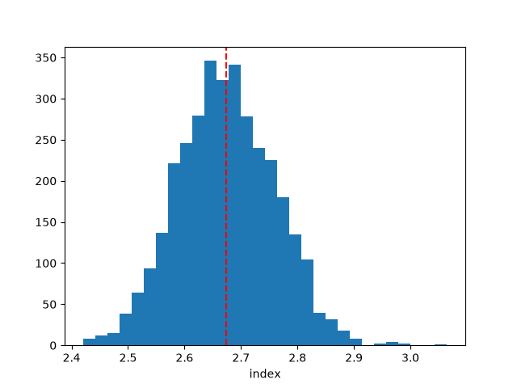
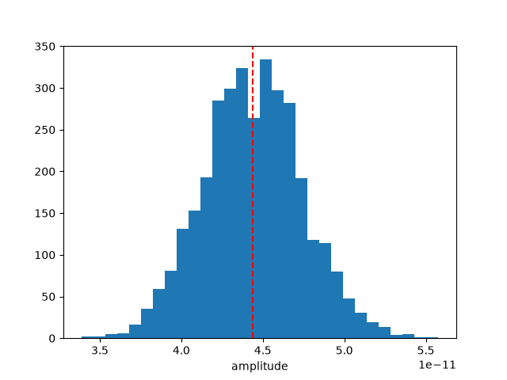
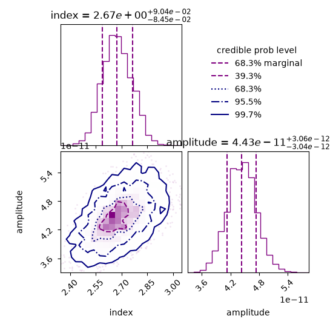
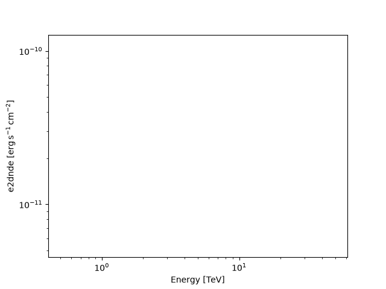
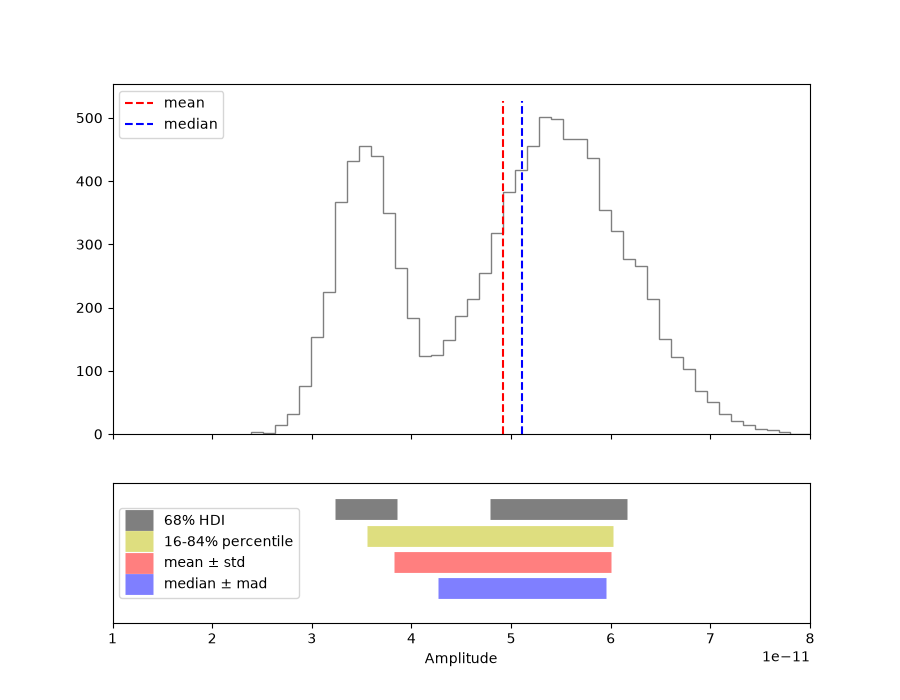
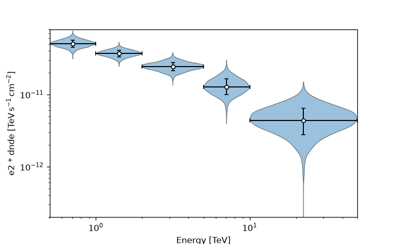

Note
Go to the end to download the full example code or to run this example in your browser via Binder.
Bayesian analysis with nested sampling#
A demonstration of a Bayesian analysis using the nested sampling technique.
Context#
1. Bayesian analysis#
Bayesian inference uses prior knowledge, in the form of a prior distribution, in order to estimate posterior probabilities which we traditionally visualise in the form of corner plots. These distributions contain more information than a maximum likelihood fit as they reveal not only the “best model” but provide a more accurate representation of errors and correlation between parameters. In particular, non-Gaussian degeneracies are complex to estimate with a maximum likelihood approach.
2. Limitations of the Markov Chain Monte Carlo approach#
A well-known approach to estimate this posterior distribution is the Markov Chain Monte Carlo (MCMC). This uses an ensemble of walkers to produce a chain of samples that after a convergence period will reach a stationary state. Once convergence is reached, the successive elements of the chain are samples of the target posterior distribution. However, the weakness of the MCMC approach lies in the “Once convergence” part. If the walkers are started far from the best likelihood region, the convergence time can be long or never reached if the walkers fall in a local minima. The choice of the initialisation point can become critical for complex models with a high number of dimensions and the ability of these walkers to escape a local minimum or to accurately describe a complex likelihood space is not guaranteed.
3. Nested sampling approach#
To overcome these issues, the nested sampling (NS) algorithm has gained traction in physics and astronomy. It is a Monte Carlo algorithm for computing an integral of the likelihood function over the prior model parameter space introduced in Skilling, 2004. The method performs this integral by evolving a collection of points through the parameter space (see recent reviews from Ashton et al., 2022, and Buchner, 2023). Without going into too many details, one important specificity of the NS method is that it starts from the entire parameter space and evolves a collection of live points to map all minima (including multiple modes if any), whereas Markov Chain Monte Carlo methods require an initialisation point and the walkers will explore the local likelihood. The ability of these walkers to escape a local minimum or to accurately describe a complex likelihood space is not guaranteed. This is a fundamental difference with MCMC or Minuit which will only ever probe the vicinity along their minimisation paths and do not have an overview of the global likelihood landscape. The analysis using the NS framework is more CPU time consuming than a standard classical fit, but it provides the full posterior distribution for all parameters, which is out of reach with traditional fitting techniques (N*(N-1)/2 contour plots to generate). In addition, it is more robust to the choice of initialisation, requires less human intervention and is therefore readily integrated in pipeline analysis. In Gammapy, we provide several NS backends: UltraNest and Nautilus. UltraNest is a package that implements the NS algorithm and is used in many astrophysical applications. Nautilus is a more recent implementation of the NS algorithm that exploits neural networks to learn a likelihood function emulator to propose new live points. It is designed to be faster and more efficient than UltraNest, especially for high-dimensional problems. For a nice visualisation of the NS method see here: sampling visualisation. And for a tutorial of UltraNest applied to X-ray fitting with concrete examples and questions see: BXA Tutorial.
See the UltraNest docs here). Note: please cite UltraNest if used for a paper If you are using the “UltraNest” library for a paper, please follow its citation scheme: Cite UltraNest.
See the Nautilus docs here). Note: please cite Nautilus if used for a paper If you are using the “Nautilus” library for a paper, please follow its citation scheme: Cite Nautilus.
Proposed approach#
In this example, we will perform a Bayesian analysis with multiple 1D spectra of the Crab nebula data and investigate their posterior distributions.
Setup#
As usual, we’ll start with some setup …
import matplotlib.pyplot as plt
import numpy as np
import astropy.units as u
from gammapy.datasets import Datasets
from gammapy.datasets import SpectrumDatasetOnOff
from gammapy.modeling.models import (
SkyModel,
UniformPrior,
LogUniformPrior,
)
from gammapy.modeling.sampler import Sampler
from gammapy.estimators import FluxCollectionEstimator
from gammapy.visualization import plot_samples_violin_vs_energy
Loading the spectral datasets#
Here we will load a few Crab 1D spectral data for which we will do a fit.
Model definition#
Now we want to define the spectral model that will be fitted to the data. The Crab spectra will be fitted here with a simple powerlaw for simplicity.
model = SkyModel.create(spectral_model="pl", name="crab")
Warning
Priors definition: Unlike a traditional fit where priors on the parameters are optional, here it is inherent to the Bayesian approach and are therefore mandatory.
In this case we will set (min,max) prior that will define the
boundaries in which the sampling will be performed.
Note that it is usually recommended to use a LogUniformPrior for
the parameters that have a large amplitude range like the
amplitude parameter.
A UniformPrior means that the samples will be drawn with uniform
probability between the (min,max) values in the linear or log space
in the case of a LogUniformPrior.
model.spectral_model.amplitude.prior = LogUniformPrior(min=1e-12, max=1e-10)
model.spectral_model.index.prior = UniformPrior(min=1, max=5)
datasets.models = [model]
print(datasets.models)
DatasetModels
Component 0: SkyModel
Name : crab
Datasets names : None
Spectral model type : PowerLawSpectralModel
Spatial model type :
Temporal model type :
Parameters:
index : 2.000 +/- 0.00
amplitude : 1.00e-12 +/- 0.0e+00 1 / (TeV s cm2)
reference (frozen): 1.000 TeV
Defining the sampler and options#
As for the Fit object, the Sampler object can receive
different backends.
The Sampler comes with “reasonable” default parameters, but you can
change them via the options dictionary, using the backend’s own option names.
Gammapy passes each option to the backend sampler constructor or to its run method.
Here is a short description of the most relevant UltraNest options that you
could change:
min_num_live_points: minimum number of live points throughout the run. More points allow to discover multiple peaks if existing, but is slower. To test the Prior boundaries and for debugging, a lower number (~100) can be used before a production run with more points (~400 or more).frac_remain: the cut-off condition for the integration, set by the maximum allowed fraction of posterior mass left in the live points vs the dead points. High values (e.g., 0.5) are faster and can be used if the posterior distribution is a relatively simple shape. A low value (1e-1, 1e-2) is optimal for finding peaks, but slower.log_dir: directory where the output files will be stored. If set to None, no files will be written. If set to a string, a directory will be created containing the ongoing status of the run and final results. For time consuming analysis, it is highly recommended to use that option to monitor the run and restart it in case of a crash (withresume=True).
More information about the UltraNest options can be found in the UltraNest docs.
More information about the Nautilus options can be found in the Nautilus docs.
A few useful options for Nautilus are:
n_live: number of live points. Equivalent ofmin_num_live_pointsin UltraNest. Due to a different methodology the recommended number of live points should be higher than in UltraNest (1000-3000) while still being faster in high-dimensional problems.f_live: fraction of the evidence from live points to use for convergence. Equivalent offrac_remainin UltraNest.pool: Pool used for parallelization of likelihood calls and sampler calculations.filepath: file path with .hdf5 extension (not directory path) where the output files will be stored.
Backend comparison: For a comparison between the two backends methods, see here. For a gamma-ray analysis, current testing shows that UltraNest can be faster (or equivalent) than Nautilus for low-dimensional problems (1-5 parameters) and Nautilus is faster for high-dimensional problems (>10 parameters) but this of course case specific. If your analysis is dominated by likelihood evaluation time, the parallelisation of the likelihood evaluation in Nautilus (using multiprocessing, just setting pool=nCPUs in the sampler options) has a simpler setup than UltraNest (MPI) and can be more efficient on laptops. Notably, multiprocessing with Nautilus can work in a Jupyter notebook while MPI with UltraNest is not supported in a notebook.
Important note: unlike the MCMC method, you don’t need to define the number of steps for which the sampler will run. The algorithm will automatically stop once a convergence criteria has been reached.
Next we can run the sampler on a given dataset. No options are accepted in the run method.
[ultranest] Sampling 400 live points from prior ...
Mono-modal Volume: ~exp(-4.60) * Expected Volume: exp(0.00) Quality: ok
index : +1.0|************************************************| +5.0
amplitude: +1.0e-12|******************************************* *** | +1.0e-10
Z=-inf(0.00%) | Like=-4257.71..-58.94 [-4257.7077..-331.4171] | it/evals=0/401 eff=0.0000% N=400
Z=-553.3(0.00%) | Like=-547.23..-58.94 [-4257.7077..-331.4171] | it/evals=27/428 eff=96.4286% N=400
Z=-534.8(0.00%) | Like=-529.01..-58.94 [-4257.7077..-331.4171] | it/evals=40/441 eff=97.5610% N=400
Z=-517.8(0.00%) | Like=-512.76..-58.94 [-4257.7077..-331.4171] | it/evals=66/469 eff=95.6522% N=400
Z=-507.5(0.00%) | Like=-502.37..-58.94 [-4257.7077..-331.4171] | it/evals=80/483 eff=96.3855% N=400
Mono-modal Volume: ~exp(-4.60) * Expected Volume: exp(-0.23) Quality: ok
index : +1.0|************************************************| +5.0
amplitude: +1.0e-12|******************************************* ****| +1.0e-10
Z=-504.6(0.00%) | Like=-499.18..-58.94 [-4257.7077..-331.4171] | it/evals=90/494 eff=95.7447% N=400
Z=-483.6(0.00%) | Like=-477.19..-58.94 [-4257.7077..-331.4171] | it/evals=111/522 eff=90.9836% N=400
Z=-474.2(0.00%) | Like=-467.95..-58.94 [-4257.7077..-331.4171] | it/evals=120/532 eff=90.9091% N=400
Z=-450.5(0.00%) | Like=-444.39..-58.94 [-4257.7077..-331.4171] | it/evals=142/560 eff=88.7500% N=400
Z=-434.4(0.00%) | Like=-428.09..-58.94 [-4257.7077..-331.4171] | it/evals=160/583 eff=87.4317% N=400
Mono-modal Volume: ~exp(-4.60) Expected Volume: exp(-0.45) Quality: ok
index : +1.0|************************************************| +5.0
amplitude: +1.0e-12|************************************************| +1.0e-10
Z=-417.8(0.00%) | Like=-411.62..-58.94 [-4257.7077..-331.4171] | it/evals=184/608 eff=88.4615% N=400
Z=-402.6(0.00%) | Like=-396.86..-58.94 [-4257.7077..-331.4171] | it/evals=200/628 eff=87.7193% N=400
Z=-383.9(0.00%) | Like=-377.86..-58.94 [-4257.7077..-331.4171] | it/evals=220/657 eff=85.6031% N=400
Z=-366.5(0.00%) | Like=-360.61..-58.94 [-4257.7077..-331.4171] | it/evals=240/678 eff=86.3309% N=400
Z=-349.7(0.00%) | Like=-341.74..-58.94 [-4257.7077..-331.4171] | it/evals=262/705 eff=85.9016% N=400
Mono-modal Volume: ~exp(-4.84) * Expected Volume: exp(-0.67) Quality: ok
index : +1.0| *********************************************| +5.0
amplitude: +1.0e-12| ***********************************************| +1.0e-10
Z=-341.9(0.00%) | Like=-334.67..-58.94 [-4257.7077..-331.4171] | it/evals=270/713 eff=86.2620% N=400
Z=-335.7(0.00%) | Like=-330.18..-58.94 [-330.8575..-191.6310] | it/evals=280/723 eff=86.6873% N=400
Z=-326.6(0.00%) | Like=-320.13..-58.94 [-330.8575..-191.6310] | it/evals=300/750 eff=85.7143% N=400
Z=-314.9(0.00%) | Like=-307.67..-58.94 [-330.8575..-191.6310] | it/evals=320/775 eff=85.3333% N=400
Z=-302.9(0.00%) | Like=-296.08..-58.94 [-330.8575..-191.6310] | it/evals=342/802 eff=85.0746% N=400
Mono-modal Volume: ~exp(-4.84) Expected Volume: exp(-0.90) Quality: ok
index : +1.0| ********************************************| +5.0
amplitude: +1.0e-12| **********************************************| +1.0e-10
Z=-290.0(0.00%) | Like=-283.51..-58.94 [-330.8575..-191.6310] | it/evals=360/827 eff=84.3091% N=400
Z=-277.6(0.00%) | Like=-270.66..-58.94 [-330.8575..-191.6310] | it/evals=382/854 eff=84.1410% N=400
Z=-266.9(0.00%) | Like=-260.41..-58.94 [-330.8575..-191.6310] | it/evals=399/882 eff=82.7801% N=400
Z=-266.4(0.00%) | Like=-258.21..-58.94 [-330.8575..-191.6310] | it/evals=400/884 eff=82.6446% N=400
Z=-255.7(0.00%) | Like=-248.93..-58.94 [-330.8575..-191.6310] | it/evals=422/911 eff=82.5832% N=400
Z=-245.8(0.00%) | Like=-239.92..-58.94 [-330.8575..-191.6310] | it/evals=440/932 eff=82.7068% N=400
Mono-modal Volume: ~exp(-5.37) * Expected Volume: exp(-1.12) Quality: ok
index : +1.0| *******************************************| +5.0
amplitude: +1.0e-12| *********************************************| +1.0e-10
Z=-241.5(0.00%) | Like=-233.46..-58.94 [-330.8575..-191.6310] | it/evals=450/945 eff=82.5688% N=400
Z=-224.8(0.00%) | Like=-218.36..-58.94 [-330.8575..-191.6310] | it/evals=475/972 eff=83.0420% N=400
Z=-223.1(0.00%) | Like=-217.07..-58.94 [-330.8575..-191.6310] | it/evals=480/979 eff=82.9016% N=400
Z=-214.9(0.00%) | Like=-208.56..-58.94 [-330.8575..-191.6310] | it/evals=502/1007 eff=82.7018% N=400
Z=-207.8(0.00%) | Like=-199.91..-58.94 [-330.8575..-191.6310] | it/evals=520/1034 eff=82.0189% N=400
Z=-200.3(0.00%) | Like=-194.21..-58.94 [-330.8575..-191.6310] | it/evals=538/1062 eff=81.2689% N=400
Mono-modal Volume: ~exp(-5.37) Expected Volume: exp(-1.35) Quality: ok
index : +1.0| *****************************************| +5.0
amplitude: +1.0e-12| ********************************************| +1.0e-10
Z=-194.8(0.00%) | Like=-187.83..-58.94 [-191.1635..-127.2534] | it/evals=555/1088 eff=80.6686% N=400
Z=-193.2(0.00%) | Like=-187.45..-58.94 [-191.1635..-127.2534] | it/evals=560/1094 eff=80.6916% N=400
Z=-187.4(0.00%) | Like=-181.09..-58.94 [-191.1635..-127.2534] | it/evals=582/1123 eff=80.4979% N=400
Z=-180.1(0.00%) | Like=-174.26..-58.94 [-191.1635..-127.2534] | it/evals=600/1147 eff=80.3213% N=400
Z=-174.8(0.00%) | Like=-168.85..-58.94 [-191.1635..-127.2534] | it/evals=621/1176 eff=80.0258% N=400
Mono-modal Volume: ~exp(-5.70) * Expected Volume: exp(-1.57) Quality: ok
index : +1.0| ******************************* **** | +5.0
amplitude: +1.0e-12| *******************************************| +1.0e-10
Z=-173.0(0.00%) | Like=-166.69..-58.94 [-191.1635..-127.2534] | it/evals=630/1189 eff=79.8479% N=400
Z=-170.4(0.00%) | Like=-163.85..-58.94 [-191.1635..-127.2534] | it/evals=640/1201 eff=79.9001% N=400
Z=-165.5(0.00%) | Like=-159.06..-58.94 [-191.1635..-127.2534] | it/evals=662/1229 eff=79.8552% N=400
Z=-161.4(0.00%) | Like=-155.23..-58.94 [-191.1635..-127.2534] | it/evals=680/1255 eff=79.5322% N=400
Z=-157.8(0.00%) | Like=-151.82..-58.94 [-191.1635..-127.2534] | it/evals=698/1283 eff=79.0487% N=400
Z=-154.2(0.00%) | Like=-148.11..-58.94 [-191.1635..-127.2534] | it/evals=716/1309 eff=78.7679% N=400
Mono-modal Volume: ~exp(-5.77) * Expected Volume: exp(-1.80) Quality: ok
index : +1.0| ****************************** | +5.0
amplitude: +1.0e-12| **************************************** | +1.0e-10
Z=-153.6(0.00%) | Like=-147.67..-58.94 [-191.1635..-127.2534] | it/evals=720/1314 eff=78.7746% N=400
Z=-150.4(0.00%) | Like=-144.01..-58.94 [-191.1635..-127.2534] | it/evals=740/1340 eff=78.7234% N=400
Z=-147.8(0.00%) | Like=-141.56..-58.94 [-191.1635..-127.2534] | it/evals=757/1368 eff=78.2025% N=400
Z=-147.3(0.00%) | Like=-141.35..-58.94 [-191.1635..-127.2534] | it/evals=760/1372 eff=78.1893% N=400
Z=-143.7(0.00%) | Like=-137.64..-58.94 [-191.1635..-127.2534] | it/evals=779/1401 eff=77.8222% N=400
Z=-138.0(0.00%) | Like=-131.41..-58.94 [-191.1635..-127.2534] | it/evals=800/1429 eff=77.7454% N=400
Mono-modal Volume: ~exp(-6.21) * Expected Volume: exp(-2.02) Quality: ok
index : +1.0| *************************** +4.0 | +5.0
amplitude: +1.0e-12| ************************************ | +1.0e-10
Z=-135.1(0.00%) | Like=-128.77..-58.94 [-191.1635..-127.2534] | it/evals=810/1446 eff=77.4379% N=400
Z=-132.0(0.00%) | Like=-126.23..-58.94 [-127.1792..-96.6156] | it/evals=834/1473 eff=77.7260% N=400
Z=-131.5(0.00%) | Like=-125.42..-58.94 [-127.1792..-96.6156] | it/evals=840/1481 eff=77.7058% N=400
Z=-129.5(0.00%) | Like=-123.19..-58.94 [-127.1792..-96.6156] | it/evals=858/1509 eff=77.3670% N=400
Z=-126.7(0.00%) | Like=-120.43..-58.94 [-127.1792..-96.6156] | it/evals=879/1536 eff=77.3768% N=400
Z=-126.5(0.00%) | Like=-120.41..-58.94 [-127.1792..-96.6156] | it/evals=880/1537 eff=77.3967% N=400
Mono-modal Volume: ~exp(-6.24) * Expected Volume: exp(-2.25) Quality: ok
index : +1.0| ************************* +3.9 | +5.0
amplitude: +1.0e-12| ********************************* | +1.0e-10
Z=-123.9(0.00%) | Like=-117.71..-58.94 [-127.1792..-96.6156] | it/evals=900/1562 eff=77.4527% N=400
Z=-121.8(0.00%) | Like=-115.95..-58.94 [-127.1792..-96.6156] | it/evals=920/1587 eff=77.5063% N=400
Z=-120.0(0.00%) | Like=-113.58..-58.94 [-127.1792..-96.6156] | it/evals=937/1615 eff=77.1193% N=400
Z=-118.0(0.00%) | Like=-111.66..-58.94 [-127.1792..-96.6156] | it/evals=955/1645 eff=76.7068% N=400
Z=-117.4(0.00%) | Like=-111.00..-58.94 [-127.1792..-96.6156] | it/evals=960/1655 eff=76.4940% N=400
Z=-114.9(0.00%) | Like=-108.38..-58.94 [-127.1792..-96.6156] | it/evals=979/1683 eff=76.3055% N=400
Mono-modal Volume: ~exp(-6.58) * Expected Volume: exp(-2.47) Quality: ok
index : +1.0| +2.0 ********************** +3.7 | +5.0
amplitude: +1.0e-12| ****************************** | +1.0e-10
Z=-113.5(0.00%) | Like=-107.04..-58.94 [-127.1792..-96.6156] | it/evals=990/1702 eff=76.0369% N=400
Z=-112.4(0.00%) | Like=-106.17..-58.94 [-127.1792..-96.6156] | it/evals=1000/1715 eff=76.0456% N=400
Z=-110.1(0.00%) | Like=-103.62..-58.94 [-127.1792..-96.6156] | it/evals=1022/1743 eff=76.0983% N=400
Z=-107.8(0.00%) | Like=-101.41..-58.94 [-127.1792..-96.6156] | it/evals=1040/1769 eff=75.9679% N=400
Z=-105.3(0.00%) | Like=-98.86..-58.94 [-127.1792..-96.6156] | it/evals=1062/1797 eff=76.0200% N=400
Z=-103.7(0.00%) | Like=-97.29..-58.94 [-127.1792..-96.6156] | it/evals=1077/1825 eff=75.5789% N=400
Mono-modal Volume: ~exp(-7.16) * Expected Volume: exp(-2.70) Quality: ok
index : +1.0| +2.0 ******************* +3.6 | +5.0
amplitude: +1.0e-12| *************************** +7.6e-11 | +1.0e-10
Z=-103.4(0.00%) | Like=-96.99..-58.94 [-127.1792..-96.6156] | it/evals=1080/1828 eff=75.6303% N=400
Z=-101.9(0.00%) | Like=-96.10..-58.94 [-96.6106..-79.3353] | it/evals=1099/1856 eff=75.4808% N=400
Z=-100.4(0.00%) | Like=-94.21..-58.94 [-96.6106..-79.3353] | it/evals=1120/1884 eff=75.4717% N=400
Z=-99.0(0.00%) | Like=-92.80..-58.94 [-96.6106..-79.3353] | it/evals=1141/1912 eff=75.4630% N=400
Z=-97.7(0.00%) | Like=-91.52..-58.94 [-96.6106..-79.3353] | it/evals=1160/1939 eff=75.3736% N=400
Mono-modal Volume: ~exp(-7.24) * Expected Volume: exp(-2.92) Quality: ok
index : +1.0| +2.1 ***************** +3.5 | +5.0
amplitude: +1.0e-12| +2.4e-11 ************************ +7.3e-11 | +1.0e-10
Z=-97.1(0.00%) | Like=-90.85..-58.94 [-96.6106..-79.3353] | it/evals=1170/1952 eff=75.3866% N=400
Z=-95.9(0.00%) | Like=-89.62..-58.94 [-96.6106..-79.3353] | it/evals=1191/1980 eff=75.3797% N=400
Z=-95.4(0.00%) | Like=-89.19..-58.94 [-96.6106..-79.3353] | it/evals=1200/1993 eff=75.3296% N=400
Z=-94.3(0.00%) | Like=-87.97..-58.94 [-96.6106..-79.3353] | it/evals=1221/2024 eff=75.1847% N=400
Z=-92.7(0.00%) | Like=-86.06..-58.94 [-96.6106..-79.3353] | it/evals=1240/2049 eff=75.1971% N=400
Mono-modal Volume: ~exp(-7.28) * Expected Volume: exp(-3.15) Quality: ok
index : +1.0| +2.1 **************** +3.4 | +5.0
amplitude: +1.0e-12| +2.6e-11 ********************* +6.9e-11 | +1.0e-10
Z=-91.3(0.00%) | Like=-84.88..-58.94 [-96.6106..-79.3353] | it/evals=1260/2075 eff=75.2239% N=400
Z=-90.0(0.00%) | Like=-83.54..-58.94 [-96.6106..-79.3353] | it/evals=1280/2099 eff=75.3384% N=400
Z=-88.6(0.00%) | Like=-82.26..-58.77 [-96.6106..-79.3353] | it/evals=1303/2125 eff=75.5362% N=400
Z=-87.7(0.00%) | Like=-81.18..-58.77 [-96.6106..-79.3353] | it/evals=1320/2147 eff=75.5581% N=400
Z=-86.5(0.00%) | Like=-80.00..-58.77 [-96.6106..-79.3353] | it/evals=1341/2176 eff=75.5068% N=400
Mono-modal Volume: ~exp(-7.38) * Expected Volume: exp(-3.37) Quality: ok
index : +1.0| +2.2 ************** +3.3 | +5.0
amplitude: +1.0e-12| +2.8e-11 ******************* +6.6e-11 | +1.0e-10
Z=-86.1(0.00%) | Like=-79.71..-58.77 [-96.6106..-79.3353] | it/evals=1350/2187 eff=75.5456% N=400
Z=-85.6(0.00%) | Like=-79.22..-58.77 [-79.2893..-68.8497] | it/evals=1360/2197 eff=75.6817% N=400
Z=-84.4(0.00%) | Like=-77.96..-58.77 [-79.2893..-68.8497] | it/evals=1382/2224 eff=75.7675% N=400
Z=-83.6(0.00%) | Like=-77.04..-58.77 [-79.2893..-68.8497] | it/evals=1400/2246 eff=75.8397% N=400
Z=-82.7(0.00%) | Like=-76.17..-58.77 [-79.2893..-68.8497] | it/evals=1419/2273 eff=75.7608% N=400
Z=-81.9(0.00%) | Like=-75.75..-58.77 [-79.2893..-68.8497] | it/evals=1438/2301 eff=75.6444% N=400
Mono-modal Volume: ~exp(-7.90) * Expected Volume: exp(-3.60) Quality: ok
index : +1.0| +2.2 ************* +3.2 | +5.0
amplitude: +1.0e-12| +2.9e-11 ****************** +6.4e-11 | +1.0e-10
Z=-81.9(0.00%) | Like=-75.70..-58.77 [-79.2893..-68.8497] | it/evals=1440/2304 eff=75.6303% N=400
Z=-81.2(0.00%) | Like=-74.78..-58.77 [-79.2893..-68.8497] | it/evals=1462/2331 eff=75.7121% N=400
Z=-80.5(0.00%) | Like=-74.13..-58.77 [-79.2893..-68.8497] | it/evals=1480/2352 eff=75.8197% N=400
Z=-79.9(0.00%) | Like=-73.61..-58.77 [-79.2893..-68.8497] | it/evals=1498/2379 eff=75.6948% N=400
Z=-79.3(0.00%) | Like=-73.14..-58.77 [-79.2893..-68.8497] | it/evals=1516/2406 eff=75.5733% N=400
Z=-79.2(0.00%) | Like=-73.10..-58.77 [-79.2893..-68.8497] | it/evals=1520/2413 eff=75.5092% N=400
Mono-modal Volume: ~exp(-7.90) Expected Volume: exp(-3.82) Quality: ok
index : +1.0| +2.3 *********** +3.1 | +5.0
amplitude: +1.0e-12| +3.0e-11 **************** +6.2e-11 | +1.0e-10
Z=-78.6(0.00%) | Like=-72.07..-58.77 [-79.2893..-68.8497] | it/evals=1538/2438 eff=75.4661% N=400
Z=-77.9(0.00%) | Like=-71.45..-58.77 [-79.2893..-68.8497] | it/evals=1556/2465 eff=75.3511% N=400
Z=-77.8(0.00%) | Like=-71.42..-58.77 [-79.2893..-68.8497] | it/evals=1560/2470 eff=75.3623% N=400
Z=-77.3(0.00%) | Like=-71.03..-58.77 [-79.2893..-68.8497] | it/evals=1579/2498 eff=75.2622% N=400
Z=-76.7(0.00%) | Like=-70.36..-58.76 [-79.2893..-68.8497] | it/evals=1598/2525 eff=75.2000% N=400
Z=-76.7(0.00%) | Like=-70.26..-58.76 [-79.2893..-68.8497] | it/evals=1600/2528 eff=75.1880% N=400
Mono-modal Volume: ~exp(-8.38) * Expected Volume: exp(-4.05) Quality: ok
index : +1.0| +2.3 *********** +3.1 | +5.0
amplitude: +1.0e-12| +3.2e-11 *************** +6.0e-11 | +1.0e-10
Z=-76.1(0.00%) | Like=-69.63..-58.76 [-79.2893..-68.8497] | it/evals=1620/2555 eff=75.1740% N=400
Z=-75.6(0.00%) | Like=-69.23..-58.76 [-79.2893..-68.8497] | it/evals=1640/2578 eff=75.2984% N=400
Z=-75.1(0.01%) | Like=-68.70..-58.76 [-68.8334..-65.8488] | it/evals=1662/2605 eff=75.3741% N=400
Z=-74.7(0.01%) | Like=-68.19..-58.76 [-68.8334..-65.8488] | it/evals=1677/2633 eff=75.1008% N=400
Z=-74.6(0.01%) | Like=-68.00..-58.76 [-68.8334..-65.8488] | it/evals=1680/2637 eff=75.1006% N=400
Z=-74.1(0.01%) | Like=-67.61..-58.76 [-68.8334..-65.8488] | it/evals=1702/2665 eff=75.1435% N=400
Mono-modal Volume: ~exp(-8.38) Expected Volume: exp(-4.27) Quality: ok
index : +1.0| +2.3 ********* +3.0 | +5.0
amplitude: +1.0e-12| +3.3e-11 ************* +5.8e-11 | +1.0e-10
Z=-73.7(0.02%) | Like=-67.22..-58.76 [-68.8334..-65.8488] | it/evals=1720/2689 eff=75.1420% N=400
Z=-73.2(0.03%) | Like=-66.75..-58.76 [-68.8334..-65.8488] | it/evals=1741/2717 eff=75.1403% N=400
Z=-72.8(0.05%) | Like=-66.38..-58.76 [-68.8334..-65.8488] | it/evals=1760/2743 eff=75.1174% N=400
Z=-72.5(0.07%) | Like=-66.16..-58.76 [-68.8334..-65.8488] | it/evals=1780/2770 eff=75.1055% N=400
Mono-modal Volume: ~exp(-8.60) * Expected Volume: exp(-4.50) Quality: ok
index : +1.0| +2.4 ******** +3.0 | +5.0
amplitude: +1.0e-12| +3.4e-11 *********** +5.7e-11 | +1.0e-10
Z=-72.1(0.09%) | Like=-65.74..-58.76 [-65.7908..-65.4723] | it/evals=1800/2795 eff=75.1566% N=400
Z=-71.8(0.14%) | Like=-65.30..-58.76 [-65.3026..-65.2991]*| it/evals=1822/2823 eff=75.1960% N=400
Z=-71.5(0.19%) | Like=-64.96..-58.76 [-64.9645..-64.9633]*| it/evals=1840/2848 eff=75.1634% N=400
Z=-71.1(0.27%) | Like=-64.64..-58.76 [-64.6442..-64.6413]*| it/evals=1862/2875 eff=75.2323% N=400
Z=-70.8(0.36%) | Like=-64.35..-58.76 [-64.3468..-64.3445]*| it/evals=1880/2897 eff=75.2903% N=400
Mono-modal Volume: ~exp(-9.05) * Expected Volume: exp(-4.73) Quality: ok
index : +1.0| +2.4 ******** +3.0 | +5.0
amplitude: +1.0e-12| +3.5e-11 *********** +5.5e-11 | +1.0e-10
Z=-70.7(0.42%) | Like=-64.25..-58.76 [-64.2461..-64.2409]*| it/evals=1890/2909 eff=75.3288% N=400
Z=-70.5(0.53%) | Like=-64.01..-58.76 [-64.0077..-63.9976] | it/evals=1908/2935 eff=75.2663% N=400
Z=-70.3(0.61%) | Like=-63.84..-58.76 [-63.8351..-63.8325]*| it/evals=1920/2950 eff=75.2941% N=400
Z=-70.1(0.75%) | Like=-63.66..-58.76 [-63.6567..-63.6504]*| it/evals=1938/2977 eff=75.2037% N=400
Z=-69.8(0.96%) | Like=-63.42..-58.76 [-63.4241..-63.4160]*| it/evals=1958/3004 eff=75.1920% N=400
Z=-69.8(0.98%) | Like=-63.41..-58.76 [-63.4160..-63.4057] | it/evals=1960/3007 eff=75.1822% N=400
Z=-69.6(1.20%) | Like=-63.32..-58.76 [-63.3217..-63.2875] | it/evals=1979/3034 eff=75.1329% N=400
Mono-modal Volume: ~exp(-9.15) * Expected Volume: exp(-4.95) Quality: ok
index : +1.0| +2.4 ******* +2.9 | +5.0
amplitude: +1.0e-12| +3.6e-11 ********** +5.4e-11 | +1.0e-10
Z=-69.6(1.21%) | Like=-63.29..-58.76 [-63.3217..-63.2875] | it/evals=1980/3035 eff=75.1423% N=400
Z=-69.4(1.50%) | Like=-63.04..-58.76 [-63.0413..-63.0393]*| it/evals=2000/3056 eff=75.3012% N=400
Z=-69.2(1.83%) | Like=-62.85..-58.76 [-62.8538..-62.8499]*| it/evals=2023/3082 eff=75.4288% N=400
Z=-69.0(2.16%) | Like=-62.63..-58.76 [-62.6737..-62.6257] | it/evals=2040/3101 eff=75.5276% N=400
Z=-68.9(2.57%) | Like=-62.47..-58.76 [-62.4681..-62.4670]*| it/evals=2060/3128 eff=75.5132% N=400
Mono-modal Volume: ~exp(-9.55) * Expected Volume: exp(-5.18) Quality: ok
index : +1.0| +2.5 ****** +2.9 | +5.0
amplitude: +1.0e-12| +3.7e-11 ********* +5.3e-11 | +1.0e-10
Z=-68.8(2.79%) | Like=-62.38..-58.76 [-62.3806..-62.3591] | it/evals=2070/3141 eff=75.5199% N=400
Z=-68.7(3.06%) | Like=-62.28..-58.76 [-62.2785..-62.2771]*| it/evals=2080/3155 eff=75.4991% N=400
Z=-68.5(3.59%) | Like=-62.06..-58.76 [-62.0591..-62.0482] | it/evals=2100/3182 eff=75.4853% N=400
Z=-68.4(4.16%) | Like=-61.92..-58.76 [-61.9153..-61.9108]*| it/evals=2118/3209 eff=75.4005% N=400
Z=-68.4(4.23%) | Like=-61.91..-58.76 [-61.9059..-61.8862] | it/evals=2120/3213 eff=75.3644% N=400
Z=-68.2(4.94%) | Like=-61.72..-58.76 [-61.7166..-61.7128]*| it/evals=2140/3240 eff=75.3521% N=400
Z=-68.1(5.71%) | Like=-61.61..-58.76 [-61.6117..-61.6027]*| it/evals=2158/3268 eff=75.2441% N=400
Mono-modal Volume: ~exp(-9.55) Expected Volume: exp(-5.40) Quality: ok
index : +1.0| +2.5 ****** +2.9 | +5.0
amplitude: +1.0e-12| +3.8e-11 ******** +5.2e-11 | +1.0e-10
Z=-68.1(5.81%) | Like=-61.60..-58.76 [-61.5974..-61.5941]*| it/evals=2160/3270 eff=75.2613% N=400
Z=-67.9(6.72%) | Like=-61.43..-58.76 [-61.4467..-61.4345] | it/evals=2180/3298 eff=75.2243% N=400
Z=-67.8(7.64%) | Like=-61.32..-58.76 [-61.3175..-61.3173]*| it/evals=2200/3323 eff=75.2651% N=400
Z=-67.7(8.62%) | Like=-61.21..-58.76 [-61.2090..-61.1893] | it/evals=2219/3350 eff=75.2203% N=400
Z=-67.5(9.64%) | Like=-61.10..-58.76 [-61.1031..-61.1026]*| it/evals=2237/3377 eff=75.1428% N=400
Z=-67.5(9.82%) | Like=-61.08..-58.76 [-61.0792..-61.0787]*| it/evals=2240/3380 eff=75.1678% N=400
Mono-modal Volume: ~exp(-9.89) * Expected Volume: exp(-5.63) Quality: ok
index : +1.0| +2.5 ****** +2.9 | +5.0
amplitude: +1.0e-12| +3.8e-11 ******* +5.1e-11 | +1.0e-10
Z=-67.5(10.41%) | Like=-61.04..-58.76 [-61.0393..-61.0387]*| it/evals=2250/3394 eff=75.1503% N=400
Z=-67.4(11.82%) | Like=-60.91..-58.76 [-60.9128..-60.9116]*| it/evals=2272/3421 eff=75.2069% N=400
Z=-67.3(12.25%) | Like=-60.88..-58.76 [-60.8792..-60.8776]*| it/evals=2280/3433 eff=75.1731% N=400
Z=-67.2(13.50%) | Like=-60.77..-58.76 [-60.7706..-60.7611]*| it/evals=2299/3460 eff=75.1307% N=400
Z=-67.1(14.69%) | Like=-60.68..-58.76 [-60.6761..-60.6740]*| it/evals=2317/3488 eff=75.0324% N=400
Z=-67.1(14.85%) | Like=-60.67..-58.76 [-60.6702..-60.6669]*| it/evals=2320/3491 eff=75.0566% N=400
Z=-67.0(16.09%) | Like=-60.59..-58.76 [-60.5911..-60.5798] | it/evals=2339/3518 eff=75.0160% N=400
Mono-modal Volume: ~exp(-9.89) Expected Volume: exp(-5.85) Quality: ok
index : +1.0| +2.5 **** +2.8 | +5.0
amplitude: +1.0e-12| +3.9e-11 ****** +5.0e-11 | +1.0e-10
Z=-67.0(17.30%) | Like=-60.52..-58.76 [-60.5231..-60.5223]*| it/evals=2355/3543 eff=74.9284% N=400
Z=-66.9(17.62%) | Like=-60.51..-58.76 [-60.5052..-60.5008]*| it/evals=2360/3548 eff=74.9682% N=400
Z=-66.8(19.20%) | Like=-60.43..-58.76 [-60.4297..-60.4273]*| it/evals=2380/3576 eff=74.9370% N=400
Z=-66.8(20.82%) | Like=-60.35..-58.76 [-60.3507..-60.3468]*| it/evals=2400/3604 eff=74.9064% N=400
Z=-66.7(22.56%) | Like=-60.27..-58.76 [-60.2670..-60.2606]*| it/evals=2420/3631 eff=74.8994% N=400
Mono-modal Volume: ~exp(-10.22) * Expected Volume: exp(-6.08) Quality: ok
index : +1.0| +2.5 **** +2.8 | +5.0
amplitude: +1.0e-12| +3.9e-11 ****** +5.0e-11 | +1.0e-10
Z=-66.7(23.42%) | Like=-60.23..-58.76 [-60.2281..-60.2220]*| it/evals=2430/3644 eff=74.9075% N=400
Z=-66.6(24.33%) | Like=-60.20..-58.76 [-60.1976..-60.1873] | it/evals=2440/3655 eff=74.9616% N=400
Z=-66.5(26.41%) | Like=-60.10..-58.76 [-60.0994..-60.0985]*| it/evals=2464/3682 eff=75.0762% N=400
Z=-66.5(27.73%) | Like=-60.04..-58.76 [-60.0416..-60.0401]*| it/evals=2480/3707 eff=74.9924% N=400
Z=-66.4(29.63%) | Like=-59.97..-58.76 [-59.9733..-59.9722]*| it/evals=2501/3734 eff=75.0150% N=400
Mono-modal Volume: ~exp(-10.70) * Expected Volume: exp(-6.30) Quality: ok
index : +1.0| +2.5 **** +2.8 | +5.0
amplitude: +1.0e-12| +4.0e-11 ****** +4.9e-11 | +1.0e-10
Z=-66.4(31.31%) | Like=-59.92..-58.75 [-59.9214..-59.9207]*| it/evals=2520/3758 eff=75.0447% N=400
Z=-66.3(33.29%) | Like=-59.87..-58.75 [-59.8725..-59.8723]*| it/evals=2541/3785 eff=75.0665% N=400
Z=-66.3(34.95%) | Like=-59.82..-58.75 [-59.8232..-59.8220]*| it/evals=2560/3807 eff=75.1394% N=400
Z=-66.2(37.06%) | Like=-59.76..-58.75 [-59.7624..-59.7622]*| it/evals=2585/3834 eff=75.2766% N=400
Z=-66.2(38.46%) | Like=-59.70..-58.75 [-59.7037..-59.7000]*| it/evals=2600/3852 eff=75.3187% N=400
Mono-modal Volume: ~exp(-10.74) * Expected Volume: exp(-6.53) Quality: ok
index : +1.0| +2.6 **** +2.8 | +5.0
amplitude: +1.0e-12| +4.0e-11 ***** +4.8e-11 | +1.0e-10
Z=-66.1(39.45%) | Like=-59.68..-58.75 [-59.6761..-59.6731]*| it/evals=2610/3864 eff=75.3464% N=400
Z=-66.1(41.60%) | Like=-59.62..-58.75 [-59.6154..-59.6148]*| it/evals=2634/3891 eff=75.4512% N=400
Z=-66.1(42.20%) | Like=-59.61..-58.75 [-59.6058..-59.6045]*| it/evals=2640/3898 eff=75.4717% N=400
Z=-66.0(44.18%) | Like=-59.57..-58.75 [-59.5701..-59.5701]*| it/evals=2662/3925 eff=75.5177% N=400
Z=-66.0(45.76%) | Like=-59.53..-58.75 [-59.5319..-59.5279]*| it/evals=2680/3948 eff=75.5355% N=400
Mono-modal Volume: ~exp(-11.18) * Expected Volume: exp(-6.75) Quality: ok
index : +1.0| +2.6 **** +2.8 | +5.0
amplitude: +1.0e-12| +4.1e-11 **** +4.8e-11 | +1.0e-10
Z=-65.9(47.58%) | Like=-59.50..-58.75 [-59.5015..-59.4995]*| it/evals=2700/3973 eff=75.5668% N=400
Z=-65.9(49.37%) | Like=-59.47..-58.75 [-59.4709..-59.4695]*| it/evals=2720/3998 eff=75.5976% N=400
Z=-65.9(51.35%) | Like=-59.42..-58.75 [-59.4178..-59.4172]*| it/evals=2742/4025 eff=75.6414% N=400
Z=-65.8(52.93%) | Like=-59.39..-58.75 [-59.3944..-59.3931]*| it/evals=2760/4052 eff=75.5750% N=400
Z=-65.8(54.83%) | Like=-59.36..-58.75 [-59.3602..-59.3602]*| it/evals=2782/4080 eff=75.5978% N=400
Mono-modal Volume: ~exp(-11.18) Expected Volume: exp(-6.98) Quality: ok
index : +1.0| +2.6 **** +2.8 | +5.0
amplitude: +1.0e-12| +4.1e-11 **** +4.8e-11 | +1.0e-10
Z=-65.8(56.27%) | Like=-59.34..-58.75 [-59.3356..-59.3350]*| it/evals=2800/4101 eff=75.6552% N=400
Z=-65.8(57.85%) | Like=-59.30..-58.75 [-59.3011..-59.3009]*| it/evals=2820/4130 eff=75.6032% N=400
Z=-65.7(59.15%) | Like=-59.29..-58.75 [-59.2902..-59.2883]*| it/evals=2837/4159 eff=75.4722% N=400
Z=-65.7(59.35%) | Like=-59.29..-58.75 [-59.2850..-59.2825]*| it/evals=2840/4162 eff=75.4918% N=400
Z=-65.7(60.91%) | Like=-59.25..-58.75 [-59.2544..-59.2516]*| it/evals=2861/4189 eff=75.5080% N=400
Mono-modal Volume: ~exp(-11.18) Expected Volume: exp(-7.20) Quality: ok
index : +1.0| +2.6 ** +2.7 | +5.0
amplitude: +1.0e-12| +4.1e-11 **** +4.7e-11 | +1.0e-10
Z=-65.7(62.29%) | Like=-59.23..-58.75 [-59.2297..-59.2293]*| it/evals=2880/4215 eff=75.4915% N=400
Z=-65.7(63.59%) | Like=-59.21..-58.75 [-59.2143..-59.2137]*| it/evals=2898/4244 eff=75.3902% N=400
Z=-65.6(64.74%) | Like=-59.19..-58.75 [-59.1912..-59.1909]*| it/evals=2914/4271 eff=75.2777% N=400
Z=-65.6(65.15%) | Like=-59.18..-58.75 [-59.1813..-59.1811]*| it/evals=2920/4279 eff=75.2771% N=400
Z=-65.6(66.37%) | Like=-59.17..-58.75 [-59.1670..-59.1661]*| it/evals=2938/4307 eff=75.1984% N=400
Z=-65.6(67.59%) | Like=-59.16..-58.75 [-59.1562..-59.1560]*| it/evals=2956/4335 eff=75.1207% N=400
Z=-65.6(67.85%) | Like=-59.15..-58.75 [-59.1525..-59.1505]*| it/evals=2960/4340 eff=75.1269% N=400
Mono-modal Volume: ~exp(-11.18) Expected Volume: exp(-7.43) Quality: ok
index : +1.0| +2.6 ** +2.7 | +5.0
amplitude: +1.0e-12| +4.2e-11 **** +4.7e-11 | +1.0e-10
Z=-65.6(68.84%) | Like=-59.14..-58.75 [-59.1361..-59.1351]*| it/evals=2975/4366 eff=75.0126% N=400
Z=-65.6(69.73%) | Like=-59.12..-58.75 [-59.1237..-59.1232]*| it/evals=2990/4396 eff=74.8248% N=400
[ultranest] Explored until L=-6e+01
[ultranest] Likelihood function evaluations: 4399
[ultranest] logZ = -65.23 +- 0.08591
[ultranest] Effective samples strategy satisfied (ESS = 1334.6, need >400)
[ultranest] Posterior uncertainty strategy is satisfied (KL: 0.46+-0.07 nat, need <0.50 nat)
[ultranest] Evidency uncertainty strategy is satisfied (dlogz=0.28, need <0.5)
[ultranest] logZ error budget: single: 0.12 bs:0.09 tail:0.26 total:0.28 required:<0.50
[ultranest] done iterating.
logZ = -65.208 +- 0.321
single instance: logZ = -65.208 +- 0.117
bootstrapped : logZ = -65.225 +- 0.185
tail : logZ = +- 0.263
insert order U test : converged: True correlation: inf iterations
index : 2.388 │ ▁▁▁▁▁▁▂▃▃▅▅▆▆▇▇▇▆▆▅▄▄▃▃▂▁▁▁▁ ▁▁▁▁ ▁ │3.097 2.674 +- 0.085
amplitude : 0.0000000000328│ ▁▁ ▁▁▁▁▁▂▂▃▄▄▅▇▇▇▆▇▇▆▇▅▃▂▃▂▁▁▁▁▁▁▁▁ ▁ │0.0000000000569 0.0000000000444 +- 0.0000000000030
Understanding the outputs#
In the Jupyter notebook, you should be able to see an interactive visualisation of how the parameter space shrinks which starts from the (min,max) shrinks down towards the optimal parameters.
The output above is filled with interesting information. Here we provide a short description of the most relevant information provided above. For more detailed information see the UltraNest docs.
During the sampling
Z=-68.8(0.53%) | Like=-63.96..-58.75 [-63.9570..-63.9539]*| it/evals=640/1068 eff=73.7327% N=300
Some important information here is:
Progress (0.53%): the completed fraction of the integral. This is not a time progress bar. Stays at zero for a good fraction of the run.
Efficiency (eff value) of the sampling: this indicates out of the proposed new points, how many were accepted. If your efficiency is too small (<<1%), maybe you should revise your priors (e.g use a LogUniform prior for the normalisation).
Final outputs
The final lines indicate that all three “convergence” strategies are satisfied (samples, posterior uncertainty, and evidence uncertainty).
logZ = -65.104 +- 0.292
The main goal of the Nested sampling algorithm is to estimate Z (the Bayesian evidence) which is given above together with an uncertainty. In a similar way to deltaLogLike and deltaAIC, deltaLogZ values can be used for model comparison. For more information see : on the use of the evidence for model comparison. An interesting comparison of the efficiency and false discovery rate of model selection with deltaLogLike and deltaLogZ is given in Appendix C of Buchner et al., 2014.
Results stored on disk
if log_dir is set to a name where the results will be stored, then
a directory is created containing many useful results and plots.
A description of these outputs is given in the Ultranest
docs.
Results#
Within a Bayesian analysis, the concept of best-fit has to be viewed differently from what is done in a gradient descent fit.
The output of the Bayesian analysis is the posterior distribution and there is no “best-fit” output. One has to define, based on the posteriors, what we want to consider as “best-fit” and several options are possible:
the mean of the distribution
the median
the lowest likelihood value
By default the DatasetModels will be updated with the mean of
the posterior distributions.
print(result_joint.models)
DatasetModels
Component 0: SkyModel
Name : crab
Datasets names : None
Spectral model type : PowerLawSpectralModel
Spatial model type :
Temporal model type :
Parameters:
index : 2.674 +/- 0.09
amplitude : 4.44e-11 +/- 3.0e-12 1 / (TeV s cm2)
reference (frozen): 1.000 TeV
The Sampler class returns a very rich dictionary.
The most “standard” information about the posterior distributions can
be found in :
print(result_joint.sampler_results["posterior"])
{'mean': [2.6740627413791125, 4.439341501827177e-11], 'stdev': [0.0854797194176531, 3.044162734397706e-12], 'median': [2.672061764606378, 4.4368629974427384e-11], 'errlo': [2.587721934097404, 4.137329542489446e-11], 'errup': [2.7618304943870933, 4.737240950389968e-11], 'information_gain_bits': [2.6870501281931043, 3.1004156000703054]}
Besides mean, errors, etc, an interesting value is the
information gain which estimates how much the posterior
distribution has shrunk with respect to the prior (i.e. how much
we’ve learned). A value < 1 means that the parameter is poorly
constrained within the prior range (we haven’t learned much with respect to our prior assumption).
For a physical interpretation of the information gain see this
example.
The SamplerResult dictionary contains also other interesting
information :
print(result_joint.sampler_results.keys())
dict_keys(['niter', 'logz', 'logzerr', 'logz_bs', 'logz_single', 'logzerr_tail', 'logzerr_bs', 'ess', 'H', 'Herr', 'posterior', 'weighted_samples', 'samples', 'maximum_likelihood', 'ncall', 'paramnames', 'logzerr_single', 'insertion_order_MWW_test'])
Of particular interest, the samples used in the process to approximate the posterior distribution can be accessed via :
for i, n in enumerate(model.parameters.free_parameters.names):
s = result_joint.samples[:, i]
fig, ax = plt.subplots()
ax.hist(s, bins=30)
ax.axvline(np.mean(s), ls="--", color="red")
ax.set_xlabel(n)
plt.show()


While the above plots are interesting, the real strength of the Bayesian analysis is to visualise all parameters correlations which is usually done using “corner plots”. Ultranest corner plot function is a wrapper around the corner package. See the above link for optional keywords. Other packages exist for corner plots, like chainconsumer which is discussed later in this tutorial.
from ultranest.plot import cornerplot
cornerplot(
result_joint.sampler_results,
plot_datapoints=True,
plot_density=True,
bins=20,
title_fmt=".2e",
smooth=False,
)
plt.show()

Spectral model error band from samples#
To compute the spectral error band (“butterfly plots”), we will directly use the samples of the posterior distribution. This is more robust as compared to the traditional method of using the covariance matrix of the parameters which implicitly assumes Gaussian errors while for the posterior distribution there is no shape assumed. This difference can become significant when the parameter errors are non-Gaussian. For this we will need to convert the list of samples back to the spectral model parameters with the relevant units (e.g. normalisation units).
def get_samples_from_posterior(spectral_model, results):
"""
Create a list of spectral parameters with correct units
from the unitless parameters returned by the sampler.
"""
n_samples = results.samples.shape[0]
samples = []
for p in spectral_model.parameters:
try:
idx = results.models.parameters.free_unique_parameters.index(p)
samples.append(results.samples[:, idx] * p.unit)
except ValueError:
samples.append(np.ones(n_samples) * p.quantity)
return samples
samples = get_samples_from_posterior(datasets.models[0].spectral_model, result_joint)
Next we can provide these samples to the plot_error
method.

Individual run analysis#
Now we’ll analyse several Crab runs individually so that we can compare them.
result_0 = sampler.run(datasets[0])
result_1 = sampler.run(datasets[1])
result_2 = sampler.run(datasets[2])
[ultranest] Sampling 400 live points from prior ...
Mono-modal Volume: ~exp(-4.07) * Expected Volume: exp(0.00) Quality: ok
index : +1.0|************************************************| +5.0
amplitude: +1.0e-12|*********************************************** | +1.0e-10
Z=-inf(0.00%) | Like=-1379.85..-21.68 [-1379.8510..-111.7438] | it/evals=0/401 eff=0.0000% N=400
Z=-173.9(0.00%) | Like=-168.15..-21.68 [-1379.8510..-111.7438] | it/evals=40/442 eff=95.2381% N=400
Z=-161.5(0.00%) | Like=-156.82..-21.68 [-1379.8510..-111.7438] | it/evals=79/489 eff=88.7640% N=400
Z=-161.3(0.00%) | Like=-156.81..-21.68 [-1379.8510..-111.7438] | it/evals=80/490 eff=88.8889% N=400
Mono-modal Volume: ~exp(-4.46) * Expected Volume: exp(-0.23) Quality: ok
index : +1.0|************************************************| +5.0
amplitude: +1.0e-12|*********************************************** | +1.0e-10
Z=-159.6(0.00%) | Like=-154.88..-21.68 [-1379.8510..-111.7438] | it/evals=90/502 eff=88.2353% N=400
Z=-151.8(0.00%) | Like=-146.77..-21.68 [-1379.8510..-111.7438] | it/evals=120/536 eff=88.2353% N=400
Z=-142.0(0.00%) | Like=-135.83..-20.54 [-1379.8510..-111.7438] | it/evals=159/584 eff=86.4130% N=400
Z=-141.4(0.00%) | Like=-135.79..-20.54 [-1379.8510..-111.7438] | it/evals=160/585 eff=86.4865% N=400
Mono-modal Volume: ~exp(-4.87) * Expected Volume: exp(-0.45) Quality: ok
index : +1.0| ***********************************************| +5.0
amplitude: +1.0e-12|************************************************| +1.0e-10
Z=-135.4(0.00%) | Like=-130.04..-20.54 [-1379.8510..-111.7438] | it/evals=180/615 eff=83.7209% N=400
Z=-131.2(0.00%) | Like=-126.38..-20.54 [-1379.8510..-111.7438] | it/evals=200/638 eff=84.0336% N=400
Z=-123.1(0.00%) | Like=-118.09..-20.54 [-1379.8510..-111.7438] | it/evals=234/684 eff=82.3944% N=400
Z=-122.0(0.00%) | Like=-117.13..-20.54 [-1379.8510..-111.7438] | it/evals=240/691 eff=82.4742% N=400
Mono-modal Volume: ~exp(-4.87) Expected Volume: exp(-0.67) Quality: ok
index : +1.0| **********************************************| +5.0
amplitude: +1.0e-12| ************************************** ***** **| +1.0e-10
Z=-115.1(0.00%) | Like=-109.74..-20.54 [-111.5385..-70.9480] | it/evals=277/734 eff=82.9341% N=400
Z=-114.4(0.00%) | Like=-109.19..-20.54 [-111.5385..-70.9480] | it/evals=280/740 eff=82.3529% N=400
Z=-109.0(0.00%) | Like=-103.59..-20.54 [-111.5385..-70.9480] | it/evals=315/790 eff=80.7692% N=400
Z=-108.1(0.00%) | Like=-103.13..-20.54 [-111.5385..-70.9480] | it/evals=320/797 eff=80.6045% N=400
Z=-101.3(0.00%) | Like=-95.71..-20.54 [-111.5385..-70.9480] | it/evals=353/845 eff=79.3258% N=400
Mono-modal Volume: ~exp(-5.09) * Expected Volume: exp(-0.90) Quality: ok
index : +1.0| ********************************************| +5.0
amplitude: +1.0e-12| ******************************************* ***| +1.0e-10
Z=-99.3(0.00%) | Like=-93.91..-20.54 [-111.5385..-70.9480] | it/evals=360/855 eff=79.1209% N=400
Z=-93.6(0.00%) | Like=-88.52..-20.54 [-111.5385..-70.9480] | it/evals=395/903 eff=78.5288% N=400
Z=-92.7(0.00%) | Like=-87.38..-20.54 [-111.5385..-70.9480] | it/evals=400/912 eff=78.1250% N=400
Z=-87.9(0.00%) | Like=-82.72..-20.54 [-111.5385..-70.9480] | it/evals=430/960 eff=76.7857% N=400
Z=-86.6(0.00%) | Like=-80.87..-20.54 [-111.5385..-70.9480] | it/evals=440/974 eff=76.6551% N=400
Mono-modal Volume: ~exp(-5.39) * Expected Volume: exp(-1.12) Quality: ok
index : +1.0| *******************************************| +5.0
amplitude: +1.0e-12| ************************************* **** | +1.0e-10
Z=-84.7(0.00%) | Like=-79.44..-20.54 [-111.5385..-70.9480] | it/evals=450/991 eff=76.1421% N=400
Z=-81.2(0.00%) | Like=-75.93..-20.54 [-111.5385..-70.9480] | it/evals=480/1034 eff=75.7098% N=400
Z=-76.6(0.00%) | Like=-71.68..-20.54 [-111.5385..-70.9480] | it/evals=516/1081 eff=75.7709% N=400
Z=-76.3(0.00%) | Like=-71.35..-20.54 [-111.5385..-70.9480] | it/evals=520/1085 eff=75.9124% N=400
Mono-modal Volume: ~exp(-5.39) Expected Volume: exp(-1.35) Quality: ok
index : +1.0| **************************************** | +5.0
amplitude: +1.0e-12| ************************************ | +1.0e-10
Z=-74.7(0.00%) | Like=-70.03..-20.54 [-70.9414..-49.9596] | it/evals=545/1130 eff=74.6575% N=400
Z=-73.5(0.00%) | Like=-68.57..-20.54 [-70.9414..-49.9596] | it/evals=560/1151 eff=74.5672% N=400
Z=-70.6(0.00%) | Like=-65.45..-20.54 [-70.9414..-49.9596] | it/evals=593/1199 eff=74.2178% N=400
Z=-69.9(0.00%) | Like=-64.73..-20.54 [-70.9414..-49.9596] | it/evals=600/1210 eff=74.0741% N=400
Mono-modal Volume: ~exp(-5.75) * Expected Volume: exp(-1.57) Quality: ok
index : +1.0| ********************************** | +5.0
amplitude: +1.0e-12| ********************************** +7.9e-11| +1.0e-10
Z=-67.3(0.00%) | Like=-62.44..-20.54 [-70.9414..-49.9596] | it/evals=630/1250 eff=74.1176% N=400
Z=-66.7(0.00%) | Like=-62.01..-20.54 [-70.9414..-49.9596] | it/evals=640/1266 eff=73.9030% N=400
Z=-64.8(0.00%) | Like=-60.04..-20.54 [-70.9414..-49.9596] | it/evals=675/1316 eff=73.6900% N=400
Z=-64.5(0.00%) | Like=-59.73..-20.54 [-70.9414..-49.9596] | it/evals=680/1324 eff=73.5931% N=400
Z=-61.9(0.00%) | Like=-56.76..-20.54 [-70.9414..-49.9596] | it/evals=717/1371 eff=73.8414% N=400
Mono-modal Volume: ~exp(-5.75) Expected Volume: exp(-1.80) Quality: ok
index : +1.0| ******************************* +4.1 | +5.0
amplitude: +1.0e-12| ******************************** +7.4e-11 | +1.0e-10
Z=-61.7(0.00%) | Like=-56.53..-20.54 [-70.9414..-49.9596] | it/evals=720/1378 eff=73.6196% N=400
Z=-59.9(0.00%) | Like=-54.62..-20.54 [-70.9414..-49.9596] | it/evals=752/1426 eff=73.2943% N=400
Z=-59.3(0.00%) | Like=-54.03..-20.54 [-70.9414..-49.9596] | it/evals=760/1440 eff=73.0769% N=400
Z=-56.7(0.00%) | Like=-51.26..-20.54 [-70.9414..-49.9596] | it/evals=796/1490 eff=73.0275% N=400
Z=-56.3(0.00%) | Like=-50.53..-20.54 [-70.9414..-49.9596] | it/evals=800/1496 eff=72.9927% N=400
Mono-modal Volume: ~exp(-5.84) * Expected Volume: exp(-2.02) Quality: ok
index : +1.0| *************************** +3.9 | +5.0
amplitude: +1.0e-12| ***************************** +7.1e-11 | +1.0e-10
Z=-55.4(0.00%) | Like=-49.96..-20.54 [-70.9414..-49.9596] | it/evals=810/1513 eff=72.7763% N=400
Z=-53.8(0.00%) | Like=-48.70..-20.54 [-49.9571..-36.9023] | it/evals=840/1552 eff=72.9167% N=400
Z=-51.8(0.00%) | Like=-46.53..-20.54 [-49.9571..-36.9023] | it/evals=877/1599 eff=73.1443% N=400
Z=-51.6(0.00%) | Like=-46.35..-20.54 [-49.9571..-36.9023] | it/evals=880/1606 eff=72.9685% N=400
Mono-modal Volume: ~exp(-6.19) * Expected Volume: exp(-2.25) Quality: ok
index : +1.0| ************************ +3.7 | +5.0
amplitude: +1.0e-12| *************************** +6.8e-11 | +1.0e-10
Z=-50.7(0.00%) | Like=-45.39..-20.50 [-49.9571..-36.9023] | it/evals=900/1638 eff=72.6979% N=400
Z=-49.8(0.00%) | Like=-44.87..-20.50 [-49.9571..-36.9023] | it/evals=920/1665 eff=72.7273% N=400
Z=-48.3(0.00%) | Like=-42.89..-20.50 [-49.9571..-36.9023] | it/evals=953/1713 eff=72.5819% N=400
Z=-47.9(0.00%) | Like=-42.39..-20.50 [-49.9571..-36.9023] | it/evals=960/1723 eff=72.5624% N=400
Z=-46.3(0.00%) | Like=-40.86..-20.50 [-49.9571..-36.9023] | it/evals=989/1772 eff=72.0845% N=400
Mono-modal Volume: ~exp(-6.85) * Expected Volume: exp(-2.47) Quality: ok
index : +1.0| ********************* +3.6 | +5.0
amplitude: +1.0e-12| ************************* +6.3e-11 | +1.0e-10
Z=-46.3(0.00%) | Like=-40.85..-20.50 [-49.9571..-36.9023] | it/evals=990/1773 eff=72.1049% N=400
Z=-45.8(0.00%) | Like=-40.60..-20.50 [-49.9571..-36.9023] | it/evals=1000/1788 eff=72.0461% N=400
Z=-44.7(0.00%) | Like=-39.59..-20.50 [-49.9571..-36.9023] | it/evals=1033/1836 eff=71.9359% N=400
Z=-44.5(0.00%) | Like=-39.34..-20.50 [-49.9571..-36.9023] | it/evals=1040/1843 eff=72.0721% N=400
Z=-43.1(0.00%) | Like=-37.81..-20.50 [-49.9571..-36.9023] | it/evals=1078/1891 eff=72.3005% N=400
Mono-modal Volume: ~exp(-6.85) Expected Volume: exp(-2.70) Quality: ok
index : +1.0| +1.9 ******************* +3.5 | +5.0
amplitude: +1.0e-12| ********************** +5.9e-11 | +1.0e-10
Z=-43.1(0.00%) | Like=-37.65..-20.50 [-49.9571..-36.9023] | it/evals=1080/1897 eff=72.1443% N=400
Z=-41.5(0.00%) | Like=-36.19..-20.50 [-36.8999..-28.5954] | it/evals=1120/1945 eff=72.4919% N=400
Z=-40.4(0.00%) | Like=-34.63..-20.50 [-36.8999..-28.5954] | it/evals=1151/1992 eff=72.2990% N=400
Z=-40.0(0.00%) | Like=-34.31..-20.50 [-36.8999..-28.5954] | it/evals=1160/2007 eff=72.1842% N=400
Mono-modal Volume: ~exp(-7.29) * Expected Volume: exp(-2.92) Quality: ok
index : +1.0| +2.0 ***************** +3.3 | +5.0
amplitude: +1.0e-12| ******************* +5.6e-11 | +1.0e-10
Z=-39.6(0.00%) | Like=-33.81..-20.50 [-36.8999..-28.5954] | it/evals=1170/2025 eff=72.0000% N=400
Z=-38.6(0.00%) | Like=-33.02..-20.50 [-36.8999..-28.5954] | it/evals=1200/2064 eff=72.1154% N=400
Z=-37.6(0.00%) | Like=-32.09..-20.50 [-36.8999..-28.5954] | it/evals=1233/2110 eff=72.1053% N=400
Z=-37.4(0.00%) | Like=-31.80..-20.50 [-36.8999..-28.5954] | it/evals=1240/2118 eff=72.1769% N=400
Mono-modal Volume: ~exp(-7.29) Expected Volume: exp(-3.15) Quality: ok
index : +1.0| +2.0 *************** +3.2 | +5.0
amplitude: +1.0e-12| ******************* +5.5e-11 | +1.0e-10
Z=-36.5(0.00%) | Like=-30.79..-20.50 [-36.8999..-28.5954] | it/evals=1273/2164 eff=72.1655% N=400
Z=-36.3(0.00%) | Like=-30.70..-20.50 [-36.8999..-28.5954] | it/evals=1280/2174 eff=72.1533% N=400
Z=-35.5(0.01%) | Like=-30.02..-20.50 [-36.8999..-28.5954] | it/evals=1309/2222 eff=71.8441% N=400
Z=-35.3(0.01%) | Like=-29.80..-20.50 [-36.8999..-28.5954] | it/evals=1320/2234 eff=71.9738% N=400
Mono-modal Volume: ~exp(-7.96) * Expected Volume: exp(-3.37) Quality: ok
index : +1.0| +2.1 ************* +3.2 | +5.0
amplitude: +1.0e-12| **************** +5.2e-11 | +1.0e-10
Z=-34.6(0.02%) | Like=-29.13..-20.50 [-36.8999..-28.5954] | it/evals=1350/2264 eff=72.4249% N=400
Z=-34.4(0.02%) | Like=-28.92..-20.50 [-36.8999..-28.5954] | it/evals=1360/2276 eff=72.4947% N=400
Z=-33.7(0.05%) | Like=-28.23..-20.50 [-28.5762..-27.3148] | it/evals=1400/2323 eff=72.8029% N=400
Z=-33.0(0.08%) | Like=-27.45..-20.50 [-28.5762..-27.3148] | it/evals=1438/2370 eff=72.9949% N=400
Mono-modal Volume: ~exp(-7.96) Expected Volume: exp(-3.60) Quality: ok
index : +1.0| +2.1 ************* +3.1 | +5.0
amplitude: +1.0e-12| ************** +5.0e-11 | +1.0e-10
Z=-33.0(0.09%) | Like=-27.43..-20.50 [-28.5762..-27.3148] | it/evals=1440/2375 eff=72.9114% N=400
Z=-32.4(0.16%) | Like=-26.89..-20.50 [-26.8949..-26.8667] | it/evals=1476/2422 eff=72.9970% N=400
Z=-32.4(0.17%) | Like=-26.85..-20.50 [-26.8572..-26.8375] | it/evals=1480/2426 eff=73.0503% N=400
Z=-31.8(0.29%) | Like=-26.24..-20.50 [-26.2659..-26.2409] | it/evals=1515/2472 eff=73.1178% N=400
Z=-31.8(0.31%) | Like=-26.11..-20.49 [-26.1133..-26.0351] | it/evals=1520/2477 eff=73.1825% N=400
Mono-modal Volume: ~exp(-7.97) * Expected Volume: exp(-3.82) Quality: ok
index : +1.0| +2.2 *********** +3.0 | +5.0
amplitude: +1.0e-12| ************* +4.8e-11 | +1.0e-10
Z=-31.6(0.36%) | Like=-25.93..-20.49 [-25.9341..-25.9092] | it/evals=1530/2490 eff=73.2057% N=400
Z=-31.2(0.57%) | Like=-25.60..-20.49 [-25.6033..-25.5884] | it/evals=1560/2526 eff=73.3772% N=400
Z=-30.7(0.88%) | Like=-25.14..-20.49 [-25.1376..-25.1188] | it/evals=1592/2573 eff=73.2628% N=400
Z=-30.6(0.96%) | Like=-25.03..-20.49 [-25.0440..-25.0279] | it/evals=1600/2583 eff=73.2936% N=400
Mono-modal Volume: ~exp(-8.03) * Expected Volume: exp(-4.05) Quality: ok
index : +1.0| +2.2 ********** +3.0 | +5.0
amplitude: +1.0e-12| +2.4e-11 *********** +4.6e-11 | +1.0e-10
Z=-30.4(1.24%) | Like=-24.81..-20.47 [-24.8089..-24.8081]*| it/evals=1620/2619 eff=73.0059% N=400
Z=-30.2(1.53%) | Like=-24.66..-20.47 [-24.6645..-24.6622]*| it/evals=1640/2645 eff=73.0512% N=400
Z=-29.9(2.08%) | Like=-24.38..-20.47 [-24.3908..-24.3792] | it/evals=1673/2692 eff=72.9930% N=400
Z=-29.8(2.23%) | Like=-24.34..-20.47 [-24.3365..-24.3266]*| it/evals=1680/2702 eff=72.9800% N=400
Mono-modal Volume: ~exp(-8.17) * Expected Volume: exp(-4.27) Quality: ok
index : +1.0| +2.2 ********** +2.9 | +5.0
amplitude: +1.0e-12| +2.5e-11 *********** +4.5e-11 | +1.0e-10
Z=-29.5(2.82%) | Like=-24.11..-20.47 [-24.1129..-24.1076]*| it/evals=1710/2740 eff=73.0769% N=400
Z=-29.5(3.05%) | Like=-23.99..-20.47 [-23.9938..-23.9869]*| it/evals=1720/2750 eff=73.1915% N=400
Z=-29.2(4.03%) | Like=-23.72..-20.47 [-23.7285..-23.7152] | it/evals=1753/2797 eff=73.1331% N=400
Z=-29.2(4.22%) | Like=-23.62..-20.47 [-23.6206..-23.5990] | it/evals=1760/2809 eff=73.0594% N=400
Z=-28.9(5.63%) | Like=-23.31..-20.47 [-23.3129..-23.2956] | it/evals=1796/2857 eff=73.0973% N=400
Mono-modal Volume: ~exp(-8.71) * Expected Volume: exp(-4.50) Quality: ok
index : +1.0| +2.3 ******** +2.9 | +5.0
amplitude: +1.0e-12| +2.6e-11 ********* +4.3e-11 | +1.0e-10
Z=-28.8(5.81%) | Like=-23.28..-20.47 [-23.2769..-23.2734]*| it/evals=1800/2861 eff=73.1410% N=400
Z=-28.6(7.20%) | Like=-23.03..-20.47 [-23.0306..-23.0221]*| it/evals=1834/2907 eff=73.1552% N=400
Z=-28.6(7.51%) | Like=-23.00..-20.47 [-22.9984..-22.9910]*| it/evals=1840/2915 eff=73.1610% N=400
Z=-28.4(9.13%) | Like=-22.86..-20.47 [-22.8624..-22.8548]*| it/evals=1871/2963 eff=73.0004% N=400
Z=-28.3(9.64%) | Like=-22.82..-20.47 [-22.8174..-22.8167]*| it/evals=1880/2975 eff=73.0097% N=400
Mono-modal Volume: ~exp(-8.71) Expected Volume: exp(-4.73) Quality: ok
index : +1.0| +2.3 ******** +2.8 | +5.0
amplitude: +1.0e-12| +2.7e-11 ********* +4.2e-11 | +1.0e-10
Z=-28.2(11.61%) | Like=-22.62..-20.47 [-22.6218..-22.6117] | it/evals=1911/3019 eff=72.9668% N=400
Z=-28.1(12.06%) | Like=-22.57..-20.47 [-22.5667..-22.5559] | it/evals=1920/3031 eff=72.9761% N=400
Z=-27.9(14.31%) | Like=-22.44..-20.47 [-22.4404..-22.4348]*| it/evals=1954/3078 eff=72.9649% N=400
Z=-27.9(14.70%) | Like=-22.41..-20.47 [-22.4084..-22.4004]*| it/evals=1960/3085 eff=72.9981% N=400
Mono-modal Volume: ~exp(-9.01) * Expected Volume: exp(-4.95) Quality: ok
index : +1.0| +2.3 ****** +2.8 | +5.0
amplitude: +1.0e-12| +2.7e-11 ******** +4.2e-11 | +1.0e-10
Z=-27.8(16.09%) | Like=-22.31..-20.46 [-22.3126..-22.3119]*| it/evals=1980/3117 eff=72.8745% N=400
Z=-27.7(17.59%) | Like=-22.25..-20.46 [-22.2479..-22.2336] | it/evals=2000/3139 eff=73.0194% N=400
Z=-27.6(20.37%) | Like=-22.06..-20.46 [-22.0614..-22.0589]*| it/evals=2037/3185 eff=73.1418% N=400
Z=-27.6(20.58%) | Like=-22.05..-20.46 [-22.0524..-22.0485]*| it/evals=2040/3189 eff=73.1445% N=400
Mono-modal Volume: ~exp(-9.70) * Expected Volume: exp(-5.18) Quality: ok
index : +1.0| +2.4 ****** +2.8 | +5.0
amplitude: +1.0e-12| +2.8e-11 ******* +4.1e-11 | +1.0e-10
Z=-27.5(22.97%) | Like=-21.90..-20.46 [-21.9010..-21.9007]*| it/evals=2070/3232 eff=73.0932% N=400
Z=-27.4(23.79%) | Like=-21.84..-20.46 [-21.8447..-21.8445]*| it/evals=2080/3245 eff=73.1107% N=400
Z=-27.3(26.90%) | Like=-21.72..-20.46 [-21.7160..-21.7146]*| it/evals=2115/3292 eff=73.1328% N=400
Z=-27.3(27.33%) | Like=-21.70..-20.46 [-21.7011..-21.7008]*| it/evals=2120/3298 eff=73.1539% N=400
Z=-27.2(29.72%) | Like=-21.62..-20.46 [-21.6171..-21.6162]*| it/evals=2146/3347 eff=72.8198% N=400
Mono-modal Volume: ~exp(-9.74) * Expected Volume: exp(-5.40) Quality: ok
index : +1.0| +2.4 ****** +2.8 | +5.0
amplitude: +1.0e-12| +2.9e-11 ****** +4.0e-11 | +1.0e-10
Z=-27.2(31.03%) | Like=-21.59..-20.46 [-21.5861..-21.5816]*| it/evals=2160/3364 eff=72.8745% N=400
Z=-27.1(33.81%) | Like=-21.49..-20.46 [-21.4921..-21.4904]*| it/evals=2190/3410 eff=72.7575% N=400
Z=-27.1(34.77%) | Like=-21.48..-20.46 [-21.4762..-21.4755]*| it/evals=2200/3421 eff=72.8236% N=400
Z=-27.0(37.81%) | Like=-21.40..-20.46 [-21.4036..-21.4028]*| it/evals=2233/3468 eff=72.7836% N=400
Z=-27.0(38.41%) | Like=-21.38..-20.46 [-21.3836..-21.3826]*| it/evals=2240/3478 eff=72.7745% N=400
Mono-modal Volume: ~exp(-10.21) * Expected Volume: exp(-5.63) Quality: ok
index : +1.0| +2.4 ***** +2.7 | +5.0
amplitude: +1.0e-12| +2.9e-11 ****** +3.9e-11 | +1.0e-10
Z=-26.9(39.31%) | Like=-21.37..-20.46 [-21.3706..-21.3700]*| it/evals=2250/3494 eff=72.7214% N=400
Z=-26.9(42.10%) | Like=-21.31..-20.46 [-21.3081..-21.3067]*| it/evals=2280/3529 eff=72.8667% N=400
Z=-26.8(45.59%) | Like=-21.20..-20.46 [-21.1979..-21.1956]*| it/evals=2318/3575 eff=73.0079% N=400
Z=-26.8(45.80%) | Like=-21.19..-20.46 [-21.1948..-21.1936]*| it/evals=2320/3577 eff=73.0249% N=400
Mono-modal Volume: ~exp(-10.21) Expected Volume: exp(-5.85) Quality: ok
index : +1.0| +2.4 **** +2.7 | +5.0
amplitude: +1.0e-12| +3.0e-11 ****** +3.9e-11 | +1.0e-10
Z=-26.7(48.55%) | Like=-21.16..-20.46 [-21.1553..-21.1492]*| it/evals=2351/3621 eff=72.9898% N=400
Z=-26.7(49.38%) | Like=-21.14..-20.46 [-21.1363..-21.1361]*| it/evals=2360/3631 eff=73.0424% N=400
Z=-26.6(52.17%) | Like=-21.10..-20.46 [-21.1021..-21.0955]*| it/evals=2392/3678 eff=72.9713% N=400
Z=-26.6(52.83%) | Like=-21.09..-20.46 [-21.0884..-21.0883]*| it/evals=2400/3690 eff=72.9483% N=400
Mono-modal Volume: ~exp(-10.21) Expected Volume: exp(-6.08) Quality: ok
index : +1.0| +2.4 **** +2.7 | +5.0
amplitude: +1.0e-12| +3.0e-11 ***** +3.8e-11 | +1.0e-10
Z=-26.6(55.62%) | Like=-21.03..-20.46 [-21.0257..-21.0255]*| it/evals=2434/3734 eff=73.0054% N=400
Z=-26.6(56.14%) | Like=-21.02..-20.46 [-21.0217..-21.0214]*| it/evals=2440/3742 eff=73.0102% N=400
Z=-26.5(59.38%) | Like=-20.97..-20.46 [-20.9739..-20.9738]*| it/evals=2480/3790 eff=73.1563% N=400
Z=-26.5(62.02%) | Like=-20.92..-20.46 [-20.9210..-20.9200]*| it/evals=2514/3838 eff=73.1239% N=400
Mono-modal Volume: ~exp(-10.55) * Expected Volume: exp(-6.30) Quality: ok
index : +1.0| +2.4 **** +2.7 | +5.0
amplitude: +1.0e-12| +3.1e-11 **** +3.8e-11 | +1.0e-10
Z=-26.5(62.48%) | Like=-20.91..-20.46 [-20.9144..-20.9138]*| it/evals=2520/3846 eff=73.1283% N=400
Z=-26.4(65.29%) | Like=-20.88..-20.46 [-20.8788..-20.8761]*| it/evals=2559/3892 eff=73.2818% N=400
Z=-26.4(65.37%) | Like=-20.88..-20.46 [-20.8761..-20.8738]*| it/evals=2560/3893 eff=73.2894% N=400
Z=-26.4(67.61%) | Like=-20.84..-20.46 [-20.8397..-20.8393]*| it/evals=2593/3940 eff=73.2486% N=400
Z=-26.4(68.08%) | Like=-20.83..-20.46 [-20.8329..-20.8324]*| it/evals=2600/3950 eff=73.2394% N=400
Mono-modal Volume: ~exp(-10.78) * Expected Volume: exp(-6.53) Quality: ok
index : +1.0| +2.5 **** +2.7 | +5.0
amplitude: +1.0e-12| +3.1e-11 **** +3.7e-11 | +1.0e-10
Z=-26.4(68.74%) | Like=-20.82..-20.46 [-20.8217..-20.8216]*| it/evals=2610/3962 eff=73.2734% N=400
[ultranest] Explored until L=-2e+01
[ultranest] Likelihood function evaluations: 3983
[ultranest] logZ = -25.99 +- 0.07783
[ultranest] Effective samples strategy satisfied (ESS = 1325.6, need >400)
[ultranest] Posterior uncertainty strategy is satisfied (KL: 0.46+-0.08 nat, need <0.50 nat)
[ultranest] Evidency uncertainty strategy is satisfied (dlogz=0.27, need <0.5)
[ultranest] logZ error budget: single: 0.11 bs:0.08 tail:0.26 total:0.27 required:<0.50
[ultranest] done iterating.
logZ = -26.000 +- 0.298
single instance: logZ = -26.000 +- 0.107
bootstrapped : logZ = -25.991 +- 0.141
tail : logZ = +- 0.262
insert order U test : converged: True correlation: inf iterations
index : 2.09 │ ▁ ▁▁▁▁▂▁▂▃▃▄▅▅▇▇▇▇▆▆▅▄▃▃▂▂▁▁▁▁▁▁▁▁▁▁ │3.11 2.58 +- 0.13
amplitude : 0.0000000000214│ ▁▁▁▁▁▁▁▂▂▃▄▅▅▅▆▇▆▇▇▆▆▆▅▄▃▂▂▂▁▁▁▁▁▁▁▁▁ │0.0000000000482 0.0000000000342 +- 0.0000000000038
[ultranest] Sampling 400 live points from prior ...
Mono-modal Volume: ~exp(-4.49) * Expected Volume: exp(0.00) Quality: ok
index : +1.0|************************************************| +5.0
amplitude: +1.0e-12|************************************** *********| +1.0e-10
Z=-inf(0.00%) | Like=-459.18..-19.37 [-459.1844..-126.2152] | it/evals=0/401 eff=0.0000% N=400
Z=-218.5(0.00%) | Like=-213.29..-19.37 [-459.1844..-126.2152] | it/evals=40/444 eff=90.9091% N=400
Z=-202.6(0.00%) | Like=-196.51..-19.37 [-459.1844..-126.2152] | it/evals=80/488 eff=90.9091% N=400
Mono-modal Volume: ~exp(-4.49) Expected Volume: exp(-0.23) Quality: ok
index : +1.0|************************************************| +5.0
amplitude: +1.0e-12|************************************** *********| +1.0e-10
Z=-188.4(0.00%) | Like=-182.79..-19.37 [-459.1844..-126.2152] | it/evals=118/531 eff=90.0763% N=400
Z=-187.5(0.00%) | Like=-181.98..-19.37 [-459.1844..-126.2152] | it/evals=120/533 eff=90.2256% N=400
Z=-173.4(0.00%) | Like=-168.36..-19.24 [-459.1844..-126.2152] | it/evals=160/580 eff=88.8889% N=400
Mono-modal Volume: ~exp(-4.49) Expected Volume: exp(-0.45) Quality: ok
index : +1.0|************************************************| +5.0
amplitude: +1.0e-12|************************************************| +1.0e-10
Z=-163.2(0.00%) | Like=-157.58..-19.24 [-459.1844..-126.2152] | it/evals=198/623 eff=88.7892% N=400
Z=-162.6(0.00%) | Like=-157.33..-19.24 [-459.1844..-126.2152] | it/evals=200/627 eff=88.1057% N=400
Z=-148.4(0.00%) | Like=-142.87..-19.24 [-459.1844..-126.2152] | it/evals=238/675 eff=86.5455% N=400
Z=-147.5(0.00%) | Like=-141.75..-19.24 [-459.1844..-126.2152] | it/evals=240/678 eff=86.3309% N=400
Mono-modal Volume: ~exp(-4.92) * Expected Volume: exp(-0.67) Quality: ok
index : +1.0| **********************************************| +5.0
amplitude: +1.0e-12| ***********************************************| +1.0e-10
Z=-139.2(0.00%) | Like=-133.41..-19.24 [-459.1844..-126.2152] | it/evals=270/718 eff=84.9057% N=400
Z=-134.7(0.00%) | Like=-128.68..-19.24 [-459.1844..-126.2152] | it/evals=280/730 eff=84.8485% N=400
Z=-121.1(0.00%) | Like=-115.51..-19.24 [-126.0814..-61.3551] | it/evals=317/777 eff=84.0849% N=400
Z=-120.3(0.00%) | Like=-114.82..-19.24 [-126.0814..-61.3551] | it/evals=320/781 eff=83.9895% N=400
Z=-110.9(0.00%) | Like=-104.81..-19.24 [-126.0814..-61.3551] | it/evals=357/829 eff=83.2168% N=400
Mono-modal Volume: ~exp(-4.92) Expected Volume: exp(-0.90) Quality: ok
index : +1.0| *******************************************| +5.0
amplitude: +1.0e-12| *********************************************| +1.0e-10
Z=-110.0(0.00%) | Like=-104.46..-19.24 [-126.0814..-61.3551] | it/evals=360/835 eff=82.7586% N=400
Z=-100.2(0.00%) | Like=-94.54..-19.24 [-126.0814..-61.3551] | it/evals=396/882 eff=82.1577% N=400
Z=-99.3(0.00%) | Like=-94.05..-19.24 [-126.0814..-61.3551] | it/evals=400/889 eff=81.7996% N=400
Z=-89.9(0.00%) | Like=-83.69..-19.24 [-126.0814..-61.3551] | it/evals=435/937 eff=81.0056% N=400
Z=-88.6(0.00%) | Like=-83.19..-19.24 [-126.0814..-61.3551] | it/evals=440/943 eff=81.0313% N=400
Mono-modal Volume: ~exp(-5.56) * Expected Volume: exp(-1.12) Quality: ok
index : +1.0| *****************************************| +5.0
amplitude: +1.0e-12| *******************************************| +1.0e-10
Z=-85.9(0.00%) | Like=-79.63..-19.24 [-126.0814..-61.3551] | it/evals=450/958 eff=80.6452% N=400
Z=-80.7(0.00%) | Like=-75.11..-19.24 [-126.0814..-61.3551] | it/evals=480/991 eff=81.2183% N=400
Z=-74.5(0.00%) | Like=-68.81..-19.24 [-126.0814..-61.3551] | it/evals=517/1038 eff=81.0345% N=400
Z=-74.0(0.00%) | Like=-68.57..-19.24 [-126.0814..-61.3551] | it/evals=520/1042 eff=80.9969% N=400
Mono-modal Volume: ~exp(-5.56) Expected Volume: exp(-1.35) Quality: ok
index : +1.0| ****************************************| +5.0
amplitude: +1.0e-12| *****************************************| +1.0e-10
Z=-69.5(0.00%) | Like=-64.39..-19.24 [-126.0814..-61.3551] | it/evals=554/1086 eff=80.7580% N=400
Z=-68.7(0.00%) | Like=-63.29..-19.24 [-126.0814..-61.3551] | it/evals=560/1095 eff=80.5755% N=400
Z=-63.7(0.00%) | Like=-58.66..-19.24 [-61.2162..-39.1509] | it/evals=597/1143 eff=80.3499% N=400
Z=-63.4(0.00%) | Like=-58.10..-19.24 [-61.2162..-39.1509] | it/evals=600/1146 eff=80.4290% N=400
Mono-modal Volume: ~exp(-5.56) Expected Volume: exp(-1.57) Quality: ok
index : +1.0| ***************************************| +5.0
amplitude: +1.0e-12| ****************************************| +1.0e-10
Z=-60.3(0.00%) | Like=-55.09..-19.24 [-61.2162..-39.1509] | it/evals=630/1184 eff=80.3571% N=400
Z=-59.4(0.00%) | Like=-54.19..-19.24 [-61.2162..-39.1509] | it/evals=640/1194 eff=80.6045% N=400
Z=-56.6(0.00%) | Like=-51.15..-19.24 [-61.2162..-39.1509] | it/evals=676/1238 eff=80.6683% N=400
Z=-56.3(0.00%) | Like=-50.98..-19.24 [-61.2162..-39.1509] | it/evals=680/1245 eff=80.4734% N=400
Z=-53.3(0.00%) | Like=-48.26..-19.24 [-61.2162..-39.1509] | it/evals=716/1293 eff=80.1792% N=400
Mono-modal Volume: ~exp(-6.25) * Expected Volume: exp(-1.80) Quality: ok
index : +1.0| *********************************** | +5.0
amplitude: +1.0e-12| ***************************************| +1.0e-10
Z=-53.1(0.00%) | Like=-47.97..-19.24 [-61.2162..-39.1509] | it/evals=720/1299 eff=80.0890% N=400
Z=-50.7(0.00%) | Like=-45.43..-19.24 [-61.2162..-39.1509] | it/evals=754/1346 eff=79.7040% N=400
Z=-50.3(0.00%) | Like=-45.07..-19.24 [-61.2162..-39.1509] | it/evals=760/1352 eff=79.8319% N=400
Z=-47.9(0.00%) | Like=-42.70..-19.24 [-61.2162..-39.1509] | it/evals=799/1399 eff=79.9800% N=400
Z=-47.8(0.00%) | Like=-42.62..-19.24 [-61.2162..-39.1509] | it/evals=800/1400 eff=80.0000% N=400
Mono-modal Volume: ~exp(-6.25) Expected Volume: exp(-2.02) Quality: ok
index : +1.0| +2.0 **************************** | +5.0
amplitude: +1.0e-12| +2.4e-11 *************************************| +1.0e-10
Z=-45.9(0.00%) | Like=-40.58..-19.24 [-61.2162..-39.1509] | it/evals=834/1444 eff=79.8851% N=400
Z=-45.5(0.00%) | Like=-40.04..-19.24 [-61.2162..-39.1509] | it/evals=840/1451 eff=79.9239% N=400
Z=-43.1(0.00%) | Like=-37.79..-19.24 [-39.1495..-29.8026] | it/evals=878/1499 eff=79.8908% N=400
Z=-43.0(0.00%) | Like=-37.69..-19.24 [-39.1495..-29.8026] | it/evals=880/1505 eff=79.6380% N=400
Mono-modal Volume: ~exp(-6.42) * Expected Volume: exp(-2.25) Quality: ok
index : +1.0| +2.1 ************************* +4.1 | +5.0
amplitude: +1.0e-12| +2.7e-11 ********************************** | +1.0e-10
Z=-41.9(0.00%) | Like=-36.78..-19.24 [-39.1495..-29.8026] | it/evals=900/1536 eff=79.2254% N=400
Z=-41.0(0.00%) | Like=-35.65..-19.24 [-39.1495..-29.8026] | it/evals=920/1561 eff=79.2420% N=400
Z=-39.4(0.00%) | Like=-34.24..-19.24 [-39.1495..-29.8026] | it/evals=955/1608 eff=79.0563% N=400
Z=-39.2(0.00%) | Like=-34.12..-19.24 [-39.1495..-29.8026] | it/evals=960/1615 eff=79.0123% N=400
Mono-modal Volume: ~exp(-7.02) * Expected Volume: exp(-2.47) Quality: ok
index : +1.0| +2.1 *********************** +3.9 | +5.0
amplitude: +1.0e-12| +2.9e-11 ******************************* | +1.0e-10
Z=-38.3(0.00%) | Like=-33.31..-19.24 [-39.1495..-29.8026] | it/evals=990/1662 eff=78.4469% N=400
Z=-38.0(0.00%) | Like=-32.96..-19.24 [-39.1495..-29.8026] | it/evals=1000/1677 eff=78.3085% N=400
Z=-37.0(0.00%) | Like=-32.21..-19.24 [-39.1495..-29.8026] | it/evals=1039/1724 eff=78.4743% N=400
Z=-37.0(0.00%) | Like=-32.17..-19.24 [-39.1495..-29.8026] | it/evals=1040/1728 eff=78.3133% N=400
Z=-36.2(0.00%) | Like=-31.09..-19.24 [-39.1495..-29.8026] | it/evals=1071/1776 eff=77.8343% N=400
Mono-modal Volume: ~exp(-7.03) * Expected Volume: exp(-2.70) Quality: ok
index : +1.0| +2.2 ********************* +3.8 | +5.0
amplitude: +1.0e-12| +3.2e-11 ***************************** | +1.0e-10
Z=-36.0(0.00%) | Like=-30.93..-19.24 [-39.1495..-29.8026] | it/evals=1080/1786 eff=77.9221% N=400
Z=-35.2(0.00%) | Like=-30.28..-19.17 [-39.1495..-29.8026] | it/evals=1117/1833 eff=77.9484% N=400
Z=-35.1(0.00%) | Like=-30.24..-19.17 [-39.1495..-29.8026] | it/evals=1120/1836 eff=77.9944% N=400
Z=-34.3(0.00%) | Like=-29.21..-19.17 [-29.7702..-26.2960] | it/evals=1157/1883 eff=78.0175% N=400
Z=-34.2(0.01%) | Like=-29.05..-19.17 [-29.7702..-26.2960] | it/evals=1160/1888 eff=77.9570% N=400
Mono-modal Volume: ~exp(-7.11) * Expected Volume: exp(-2.92) Quality: ok
index : +1.0| +2.2 ******************* +3.7 | +5.0
amplitude: +1.0e-12| +3.3e-11 ************************** | +1.0e-10
Z=-34.0(0.01%) | Like=-28.82..-19.17 [-29.7702..-26.2960] | it/evals=1170/1902 eff=77.8961% N=400
Z=-33.3(0.01%) | Like=-28.06..-19.17 [-29.7702..-26.2960] | it/evals=1200/1942 eff=77.8210% N=400
Z=-32.6(0.03%) | Like=-27.42..-19.17 [-29.7702..-26.2960] | it/evals=1233/1992 eff=77.4497% N=400
Z=-32.4(0.03%) | Like=-27.20..-19.17 [-29.7702..-26.2960] | it/evals=1240/1999 eff=77.5485% N=400
Mono-modal Volume: ~exp(-7.70) * Expected Volume: exp(-3.15) Quality: ok
index : +1.0| +2.3 **************** +3.5 | +5.0
amplitude: +1.0e-12| +3.6e-11 *********************** | +1.0e-10
Z=-32.0(0.04%) | Like=-26.75..-19.17 [-29.7702..-26.2960] | it/evals=1260/2028 eff=77.3956% N=400
Z=-31.6(0.07%) | Like=-26.34..-19.17 [-29.7702..-26.2960] | it/evals=1280/2050 eff=77.5758% N=400
Z=-31.0(0.13%) | Like=-25.86..-19.17 [-25.8578..-25.8428] | it/evals=1313/2100 eff=77.2353% N=400
Z=-30.9(0.14%) | Like=-25.81..-19.17 [-25.8065..-25.7756] | it/evals=1320/2110 eff=77.1930% N=400
Mono-modal Volume: ~exp(-7.70) Expected Volume: exp(-3.37) Quality: ok
index : +1.0| +2.3 *************** +3.4 | +5.0
amplitude: +1.0e-12| +3.7e-11 ********************* +7.8e-11| +1.0e-10
Z=-30.4(0.22%) | Like=-25.25..-19.17 [-25.2480..-25.2453]*| it/evals=1353/2152 eff=77.2260% N=400
Z=-30.3(0.24%) | Like=-25.14..-19.17 [-25.1402..-25.1382]*| it/evals=1360/2160 eff=77.2727% N=400
Z=-29.9(0.38%) | Like=-24.77..-19.17 [-24.7745..-24.7602] | it/evals=1394/2206 eff=77.1872% N=400
Z=-29.8(0.40%) | Like=-24.68..-19.17 [-24.6762..-24.6664]*| it/evals=1400/2216 eff=77.0925% N=400
Z=-29.3(0.66%) | Like=-24.12..-19.17 [-24.1306..-24.1199] | it/evals=1437/2262 eff=77.1751% N=400
Mono-modal Volume: ~exp(-7.88) * Expected Volume: exp(-3.60) Quality: ok
index : +1.0| +2.4 ************* +3.4 | +5.0
amplitude: +1.0e-12| +3.8e-11 ******************* +7.6e-11 | +1.0e-10
Z=-29.3(0.69%) | Like=-24.10..-19.17 [-24.1045..-24.0843] | it/evals=1440/2266 eff=77.1704% N=400
Z=-28.9(1.07%) | Like=-23.68..-19.17 [-23.6811..-23.6597] | it/evals=1476/2313 eff=77.1563% N=400
Z=-28.8(1.11%) | Like=-23.61..-19.17 [-23.6100..-23.5875] | it/evals=1480/2320 eff=77.0833% N=400
Z=-28.5(1.51%) | Like=-23.33..-19.17 [-23.3331..-23.3210] | it/evals=1509/2367 eff=76.7158% N=400
Z=-28.4(1.70%) | Like=-23.18..-19.17 [-23.1811..-23.1727]*| it/evals=1520/2383 eff=76.6515% N=400
Mono-modal Volume: ~exp(-8.41) * Expected Volume: exp(-3.82) Quality: ok
index : +1.0| +2.4 ************ +3.3 | +5.0
amplitude: +1.0e-12| +4.0e-11 ***************** +7.3e-11 | +1.0e-10
Z=-28.3(1.89%) | Like=-23.06..-19.17 [-23.1068..-23.0555] | it/evals=1530/2394 eff=76.7302% N=400
Z=-28.0(2.60%) | Like=-22.79..-19.17 [-22.8009..-22.7907] | it/evals=1560/2430 eff=76.8473% N=400
Z=-27.7(3.41%) | Like=-22.49..-19.17 [-22.4932..-22.4837]*| it/evals=1590/2477 eff=76.5527% N=400
Z=-27.6(3.72%) | Like=-22.45..-19.17 [-22.4544..-22.4437] | it/evals=1600/2489 eff=76.5917% N=400
Mono-modal Volume: ~exp(-8.41) Expected Volume: exp(-4.05) Quality: ok
index : +1.0| +2.4 *********** +3.3 | +5.0
amplitude: +1.0e-12| +4.2e-11 *************** +7.0e-11 | +1.0e-10
Z=-27.4(4.80%) | Like=-22.28..-19.17 [-22.2775..-22.2629] | it/evals=1632/2532 eff=76.5478% N=400
Z=-27.3(5.06%) | Like=-22.22..-19.17 [-22.2177..-22.2100]*| it/evals=1640/2541 eff=76.5997% N=400
Z=-27.1(6.47%) | Like=-21.98..-19.17 [-21.9773..-21.9763]*| it/evals=1675/2588 eff=76.5539% N=400
Z=-27.1(6.65%) | Like=-21.93..-19.17 [-21.9561..-21.9325] | it/evals=1680/2594 eff=76.5725% N=400
Mono-modal Volume: ~exp(-8.68) * Expected Volume: exp(-4.27) Quality: ok
index : +1.0| +2.5 ********** +3.2 | +5.0
amplitude: +1.0e-12| +4.3e-11 ************** +6.9e-11 | +1.0e-10
Z=-26.9(7.95%) | Like=-21.68..-19.17 [-21.6785..-21.6717]*| it/evals=1710/2637 eff=76.4417% N=400
Z=-26.8(8.45%) | Like=-21.63..-19.17 [-21.6335..-21.6275]*| it/evals=1720/2649 eff=76.4784% N=400
Z=-26.6(10.69%) | Like=-21.37..-19.17 [-21.3669..-21.3614]*| it/evals=1759/2695 eff=76.6449% N=400
Z=-26.6(10.74%) | Like=-21.36..-19.17 [-21.3614..-21.3601]*| it/evals=1760/2696 eff=76.6551% N=400
Z=-26.4(13.28%) | Like=-21.18..-19.17 [-21.1767..-21.1713]*| it/evals=1798/2743 eff=76.7392% N=400
Mono-modal Volume: ~exp(-8.74) * Expected Volume: exp(-4.50) Quality: ok
index : +1.0| +2.5 ******** +3.2 | +5.0
amplitude: +1.0e-12| +4.4e-11 ************* +6.8e-11 | +1.0e-10
Z=-26.4(13.40%) | Like=-21.17..-19.17 [-21.1710..-21.1667]*| it/evals=1800/2747 eff=76.6937% N=400
Z=-26.2(15.70%) | Like=-21.03..-19.16 [-21.0272..-21.0177]*| it/evals=1834/2793 eff=76.6402% N=400
Z=-26.2(16.12%) | Like=-20.98..-19.16 [-20.9772..-20.9707]*| it/evals=1840/2803 eff=76.5710% N=400
Z=-26.0(18.99%) | Like=-20.83..-19.16 [-20.8281..-20.8254]*| it/evals=1874/2853 eff=76.3962% N=400
Z=-26.0(19.45%) | Like=-20.80..-19.16 [-20.8032..-20.8027]*| it/evals=1880/2863 eff=76.3297% N=400
Mono-modal Volume: ~exp(-8.82) * Expected Volume: exp(-4.73) Quality: ok
index : +1.0| +2.5 ******** +3.1 | +5.0
amplitude: +1.0e-12| +4.5e-11 *********** +6.6e-11 | +1.0e-10
Z=-26.0(20.32%) | Like=-20.77..-19.16 [-20.7803..-20.7686] | it/evals=1890/2878 eff=76.2712% N=400
Z=-25.9(22.88%) | Like=-20.68..-19.16 [-20.6769..-20.6765]*| it/evals=1920/2916 eff=76.3116% N=400
Z=-25.7(25.90%) | Like=-20.53..-19.16 [-20.5342..-20.5238] | it/evals=1957/2963 eff=76.3558% N=400
Z=-25.7(26.21%) | Like=-20.51..-19.16 [-20.5216..-20.5096] | it/evals=1960/2966 eff=76.3835% N=400
Mono-modal Volume: ~exp(-9.13) * Expected Volume: exp(-4.95) Quality: ok
index : +1.0| +2.6 ******* +3.1 | +5.0
amplitude: +1.0e-12| +4.6e-11 ********* +6.5e-11 | +1.0e-10
Z=-25.7(28.01%) | Like=-20.44..-19.16 [-20.4411..-20.4379]*| it/evals=1980/2993 eff=76.3594% N=400
Z=-25.6(29.81%) | Like=-20.35..-19.16 [-20.3521..-20.3512]*| it/evals=2000/3018 eff=76.3942% N=400
Z=-25.5(32.85%) | Like=-20.23..-19.16 [-20.2278..-20.2242]*| it/evals=2033/3066 eff=76.2566% N=400
Z=-25.5(33.51%) | Like=-20.21..-19.16 [-20.2108..-20.2103]*| it/evals=2040/3074 eff=76.2902% N=400
Mono-modal Volume: ~exp(-9.64) * Expected Volume: exp(-5.18) Quality: ok
index : +1.0| +2.6 ****** +3.0 | +5.0
amplitude: +1.0e-12| +4.7e-11 ********* +6.4e-11 | +1.0e-10
Z=-25.4(36.31%) | Like=-20.15..-19.16 [-20.1455..-20.1375]*| it/evals=2070/3116 eff=76.2150% N=400
Z=-25.4(37.15%) | Like=-20.12..-19.16 [-20.1184..-20.1158]*| it/evals=2080/3126 eff=76.3023% N=400
Z=-25.3(40.52%) | Like=-20.06..-19.16 [-20.0640..-20.0638]*| it/evals=2117/3173 eff=76.3433% N=400
Z=-25.3(40.82%) | Like=-20.06..-19.16 [-20.0603..-20.0599]*| it/evals=2120/3176 eff=76.3689% N=400
Z=-25.2(43.71%) | Like=-20.00..-19.16 [-20.0028..-20.0015]*| it/evals=2154/3223 eff=76.3018% N=400
Mono-modal Volume: ~exp(-9.64) Expected Volume: exp(-5.40) Quality: ok
index : +1.0| +2.6 ****** +3.0 | +5.0
amplitude: +1.0e-12| +4.8e-11 ********* +6.3e-11 | +1.0e-10
Z=-25.2(44.28%) | Like=-19.99..-19.16 [-19.9932..-19.9912]*| it/evals=2160/3230 eff=76.3251% N=400
Z=-25.1(47.19%) | Like=-19.93..-19.16 [-19.9293..-19.9285]*| it/evals=2192/3279 eff=76.1375% N=400
Z=-25.1(47.85%) | Like=-19.92..-19.16 [-19.9223..-19.9221]*| it/evals=2200/3290 eff=76.1246% N=400
Z=-25.0(51.01%) | Like=-19.86..-19.16 [-19.8553..-19.8525]*| it/evals=2237/3337 eff=76.1662% N=400
Z=-25.0(51.22%) | Like=-19.85..-19.16 [-19.8490..-19.8473]*| it/evals=2240/3343 eff=76.1128% N=400
Mono-modal Volume: ~exp(-9.70) * Expected Volume: exp(-5.63) Quality: ok
index : +1.0| +2.6 ****** +3.0 | +5.0
amplitude: +1.0e-12| +4.9e-11 ******* +6.2e-11 | +1.0e-10
Z=-25.0(52.09%) | Like=-19.84..-19.16 [-19.8362..-19.8337]*| it/evals=2250/3356 eff=76.1164% N=400
Z=-25.0(54.73%) | Like=-19.79..-19.16 [-19.7890..-19.7888]*| it/evals=2280/3391 eff=76.2287% N=400
Z=-24.9(57.33%) | Like=-19.72..-19.16 [-19.7159..-19.7136]*| it/evals=2312/3439 eff=76.0777% N=400
Z=-24.9(57.96%) | Like=-19.70..-19.16 [-19.7026..-19.7019]*| it/evals=2320/3455 eff=75.9411% N=400
Mono-modal Volume: ~exp(-10.17) * Expected Volume: exp(-5.85) Quality: ok
index : +1.0| +2.6 ***** +3.0 | +5.0
amplitude: +1.0e-12| +4.9e-11 ******* +6.1e-11 | +1.0e-10
Z=-24.9(59.44%) | Like=-19.68..-19.16 [-19.6800..-19.6791]*| it/evals=2340/3482 eff=75.9247% N=400
Z=-24.9(61.00%) | Like=-19.65..-19.16 [-19.6496..-19.6495]*| it/evals=2360/3510 eff=75.8842% N=400
Z=-24.8(63.55%) | Like=-19.61..-19.16 [-19.6075..-19.6074]*| it/evals=2396/3557 eff=75.8948% N=400
Z=-24.8(63.84%) | Like=-19.60..-19.16 [-19.6025..-19.6018]*| it/evals=2400/3562 eff=75.9013% N=400
Mono-modal Volume: ~exp(-10.45) * Expected Volume: exp(-6.08) Quality: ok
index : +1.0| +2.7 ***** +3.0 | +5.0
amplitude: +1.0e-12| +5.0e-11 ****** +6.0e-11 | +1.0e-10
Z=-24.8(65.88%) | Like=-19.56..-19.16 [-19.5607..-19.5606]*| it/evals=2430/3602 eff=75.8901% N=400
Z=-24.8(66.61%) | Like=-19.55..-19.16 [-19.5507..-19.5491]*| it/evals=2440/3614 eff=75.9179% N=400
Z=-24.7(69.04%) | Like=-19.52..-19.16 [-19.5189..-19.5169]*| it/evals=2476/3661 eff=75.9276% N=400
Z=-24.7(69.30%) | Like=-19.51..-19.16 [-19.5124..-19.5123]*| it/evals=2480/3667 eff=75.9106% N=400
[ultranest] Explored until L=-2e+01
[ultranest] Likelihood function evaluations: 3680
[ultranest] logZ = -24.37 +- 0.07232
[ultranest] Effective samples strategy satisfied (ESS = 1328.1, need >400)
[ultranest] Posterior uncertainty strategy is satisfied (KL: 0.45+-0.11 nat, need <0.50 nat)
[ultranest] Evidency uncertainty strategy is satisfied (dlogz=0.27, need <0.5)
[ultranest] logZ error budget: single: 0.10 bs:0.07 tail:0.26 total:0.27 required:<0.50
[ultranest] done iterating.
logZ = -24.360 +- 0.322
single instance: logZ = -24.360 +- 0.102
bootstrapped : logZ = -24.370 +- 0.187
tail : logZ = +- 0.262
insert order U test : converged: True correlation: inf iterations
index : 2.30 │ ▁▁▁▁▁▂▂▄▃▆▆▆▇▇▇▇▇▇▆▆▄▄▂▂▂▂▁▁▁▁▁▁▁▁ ▁▁ │3.57 2.83 +- 0.17
amplitude : 0.0000000000336│ ▁ ▁▁▁▁▁▁▁▂▂▄▄▅▇▆▆▆▇▆▇▅▅▃▃▄▃▂▂▁▁▁▁▁▁▁▁ │0.0000000000770 0.0000000000551 +- 0.0000000000060
[ultranest] Sampling 400 live points from prior ...
Mono-modal Volume: ~exp(-4.21) * Expected Volume: exp(0.00) Quality: ok
index : +1.0|************************************************| +5.0
amplitude: +1.0e-12|******************************* ************** *| +1.0e-10
Z=-inf(0.00%) | Like=-1312.64..-13.47 [-1312.6419..-92.6155] | it/evals=0/401 eff=0.0000% N=400
Z=-150.6(0.00%) | Like=-146.10..-13.47 [-1312.6419..-92.6155] | it/evals=40/446 eff=86.9565% N=400
Z=-138.9(0.00%) | Like=-133.71..-13.47 [-1312.6419..-92.6155] | it/evals=80/493 eff=86.0215% N=400
Mono-modal Volume: ~exp(-4.71) * Expected Volume: exp(-0.23) Quality: ok
index : +1.0|************************************************| +5.0
amplitude: +1.0e-12|********************************************** *| +1.0e-10
Z=-136.9(0.00%) | Like=-132.54..-13.47 [-1312.6419..-92.6155] | it/evals=90/504 eff=86.5385% N=400
Z=-130.9(0.00%) | Like=-124.57..-13.47 [-1312.6419..-92.6155] | it/evals=120/542 eff=84.5070% N=400
Z=-120.6(0.00%) | Like=-115.84..-13.47 [-1312.6419..-92.6155] | it/evals=160/589 eff=84.6561% N=400
Mono-modal Volume: ~exp(-4.71) Expected Volume: exp(-0.45) Quality: ok
index : +1.0|************************************************| +5.0
amplitude: +1.0e-12|********************************************** *| +1.0e-10
Z=-113.4(0.00%) | Like=-108.63..-13.47 [-1312.6419..-92.6155] | it/evals=195/635 eff=82.9787% N=400
Z=-112.7(0.00%) | Like=-107.88..-13.47 [-1312.6419..-92.6155] | it/evals=200/642 eff=82.6446% N=400
Z=-105.5(0.00%) | Like=-100.37..-13.47 [-1312.6419..-92.6155] | it/evals=237/689 eff=82.0069% N=400
Z=-104.7(0.00%) | Like=-99.31..-13.47 [-1312.6419..-92.6155] | it/evals=240/692 eff=82.1918% N=400
Mono-modal Volume: ~exp(-5.04) * Expected Volume: exp(-0.67) Quality: ok
index : +1.0| **********************************************| +5.0
amplitude: +1.0e-12| ********************************************* *| +1.0e-10
Z=-98.8(0.00%) | Like=-93.01..-13.47 [-1312.6419..-92.6155] | it/evals=270/731 eff=81.5710% N=400
Z=-96.5(0.00%) | Like=-91.29..-13.47 [-92.5349..-49.6722] | it/evals=280/742 eff=81.8713% N=400
Z=-90.7(0.00%) | Like=-85.53..-13.47 [-92.5349..-49.6722] | it/evals=320/788 eff=82.4742% N=400
Z=-83.0(0.00%) | Like=-77.26..-13.47 [-92.5349..-49.6722] | it/evals=357/835 eff=82.0690% N=400
Mono-modal Volume: ~exp(-5.04) Expected Volume: exp(-0.90) Quality: ok
index : +1.0| *********************************************| +5.0
amplitude: +1.0e-12| ******************************************** *| +1.0e-10
Z=-81.9(0.00%) | Like=-75.89..-13.47 [-92.5349..-49.6722] | it/evals=360/838 eff=82.1918% N=400
Z=-75.0(0.00%) | Like=-69.53..-13.47 [-92.5349..-49.6722] | it/evals=400/885 eff=82.4742% N=400
Z=-67.9(0.00%) | Like=-62.75..-13.47 [-92.5349..-49.6722] | it/evals=438/933 eff=82.1764% N=400
Z=-67.6(0.00%) | Like=-62.56..-13.47 [-92.5349..-49.6722] | it/evals=440/935 eff=82.2430% N=400
Mono-modal Volume: ~exp(-5.34) * Expected Volume: exp(-1.12) Quality: ok
index : +1.0| ******************************************| +5.0
amplitude: +1.0e-12| *********************************************| +1.0e-10
Z=-66.1(0.00%) | Like=-60.79..-13.47 [-92.5349..-49.6722] | it/evals=450/948 eff=82.1168% N=400
Z=-61.4(0.00%) | Like=-56.02..-13.33 [-92.5349..-49.6722] | it/evals=480/990 eff=81.3559% N=400
Z=-57.0(0.00%) | Like=-52.02..-13.33 [-92.5349..-49.6722] | it/evals=514/1040 eff=80.3125% N=400
Z=-56.4(0.00%) | Like=-51.15..-13.33 [-92.5349..-49.6722] | it/evals=520/1051 eff=79.8771% N=400
Mono-modal Volume: ~exp(-5.79) * Expected Volume: exp(-1.35) Quality: ok
index : +1.0| *****************************************| +5.0
amplitude: +1.0e-12| *******************************************| +1.0e-10
Z=-54.3(0.00%) | Like=-49.54..-13.33 [-49.5924..-32.3881] | it/evals=540/1076 eff=79.8817% N=400
Z=-52.5(0.00%) | Like=-47.40..-13.33 [-49.5924..-32.3881] | it/evals=560/1105 eff=79.4326% N=400
Z=-49.6(0.00%) | Like=-44.70..-13.33 [-49.5924..-32.3881] | it/evals=598/1153 eff=79.4157% N=400
Z=-49.5(0.00%) | Like=-44.56..-13.33 [-49.5924..-32.3881] | it/evals=600/1155 eff=79.4702% N=400
Mono-modal Volume: ~exp(-5.79) Expected Volume: exp(-1.57) Quality: ok
index : +1.0| ************************************** | +5.0
amplitude: +1.0e-12| ******************************************| +1.0e-10
Z=-47.3(0.00%) | Like=-42.43..-13.33 [-49.5924..-32.3881] | it/evals=634/1199 eff=79.3492% N=400
Z=-47.0(0.00%) | Like=-42.26..-13.33 [-49.5924..-32.3881] | it/evals=640/1208 eff=79.2079% N=400
Z=-46.9(0.00%) | Like=-42.18..-13.33 [-49.5924..-32.3881] | it/evals=642/1211 eff=79.1615% N=400
Z=-45.1(0.00%) | Like=-40.32..-13.33 [-49.5924..-32.3881] | it/evals=676/1259 eff=78.6962% N=400
Z=-44.9(0.00%) | Like=-40.05..-13.33 [-49.5924..-32.3881] | it/evals=680/1263 eff=78.7949% N=400
Z=-43.0(0.00%) | Like=-38.21..-13.33 [-49.5924..-32.3881] | it/evals=717/1311 eff=78.7047% N=400
Mono-modal Volume: ~exp(-6.24) * Expected Volume: exp(-1.80) Quality: ok
index : +1.0| ********************************* | +5.0
amplitude: +1.0e-12| *****************************************| +1.0e-10
Z=-42.9(0.00%) | Like=-37.94..-13.33 [-49.5924..-32.3881] | it/evals=720/1314 eff=78.7746% N=400
Z=-41.2(0.00%) | Like=-36.24..-13.33 [-49.5924..-32.3881] | it/evals=752/1363 eff=78.0893% N=400
Z=-40.8(0.00%) | Like=-35.79..-13.33 [-49.5924..-32.3881] | it/evals=760/1373 eff=78.1089% N=400
Z=-39.1(0.00%) | Like=-34.27..-13.33 [-49.5924..-32.3881] | it/evals=796/1424 eff=77.7344% N=400
Z=-38.9(0.00%) | Like=-34.08..-13.33 [-49.5924..-32.3881] | it/evals=800/1429 eff=77.7454% N=400
Mono-modal Volume: ~exp(-6.24) Expected Volume: exp(-2.02) Quality: ok
index : +1.0| ***************************** | +5.0
amplitude: +1.0e-12| ****************************************| +1.0e-10
Z=-37.7(0.00%) | Like=-32.67..-13.33 [-49.5924..-32.3881] | it/evals=830/1473 eff=77.3532% N=400
Z=-37.2(0.00%) | Like=-32.26..-13.33 [-32.3705..-23.1801] | it/evals=840/1487 eff=77.2769% N=400
Z=-35.8(0.00%) | Like=-30.79..-13.33 [-32.3705..-23.1801] | it/evals=874/1537 eff=76.8690% N=400
Z=-35.5(0.00%) | Like=-30.43..-13.33 [-32.3705..-23.1801] | it/evals=880/1545 eff=76.8559% N=400
Mono-modal Volume: ~exp(-6.36) * Expected Volume: exp(-2.25) Quality: ok
index : +1.0| +2.0 ************************** +4.0 | +5.0
amplitude: +1.0e-12| ***************************************| +1.0e-10
Z=-34.8(0.00%) | Like=-29.96..-13.33 [-32.3705..-23.1801] | it/evals=900/1577 eff=76.4656% N=400
Z=-34.2(0.00%) | Like=-29.45..-13.33 [-32.3705..-23.1801] | it/evals=920/1603 eff=76.4755% N=400
Z=-33.0(0.00%) | Like=-27.54..-13.33 [-32.3705..-23.1801] | it/evals=954/1651 eff=76.2590% N=400
Z=-32.7(0.00%) | Like=-27.23..-13.33 [-32.3705..-23.1801] | it/evals=960/1659 eff=76.2510% N=400
Mono-modal Volume: ~exp(-6.85) * Expected Volume: exp(-2.47) Quality: ok
index : +1.0| +2.0 ********************** +3.8 | +5.0
amplitude: +1.0e-12| **************************************| +1.0e-10
Z=-31.5(0.00%) | Like=-26.53..-13.33 [-32.3705..-23.1801] | it/evals=990/1697 eff=76.3300% N=400
Z=-31.2(0.00%) | Like=-26.09..-13.33 [-32.3705..-23.1801] | it/evals=1000/1709 eff=76.3942% N=400
Z=-30.0(0.00%) | Like=-24.72..-13.33 [-32.3705..-23.1801] | it/evals=1037/1756 eff=76.4749% N=400
Z=-29.9(0.00%) | Like=-24.64..-13.33 [-32.3705..-23.1801] | it/evals=1040/1759 eff=76.5269% N=400
Z=-28.8(0.00%) | Like=-23.69..-13.33 [-32.3705..-23.1801] | it/evals=1076/1806 eff=76.5292% N=400
Mono-modal Volume: ~exp(-6.98) * Expected Volume: exp(-2.70) Quality: ok
index : +1.0| +2.1 ******************** +3.7 | +5.0
amplitude: +1.0e-12| +2.5e-11 *********************************** | +1.0e-10
Z=-28.7(0.00%) | Like=-23.60..-13.33 [-32.3705..-23.1801] | it/evals=1080/1814 eff=76.3791% N=400
Z=-27.8(0.01%) | Like=-22.90..-13.33 [-23.1723..-20.3943] | it/evals=1115/1862 eff=76.2654% N=400
Z=-27.7(0.01%) | Like=-22.81..-13.33 [-23.1723..-20.3943] | it/evals=1120/1870 eff=76.1905% N=400
Z=-27.0(0.02%) | Like=-22.01..-13.33 [-23.1723..-20.3943] | it/evals=1157/1917 eff=76.2690% N=400
Z=-27.0(0.02%) | Like=-21.92..-13.33 [-23.1723..-20.3943] | it/evals=1160/1921 eff=76.2656% N=400
Mono-modal Volume: ~exp(-7.24) * Expected Volume: exp(-2.92) Quality: ok
index : +1.0| +2.2 ****************** +3.6 | +5.0
amplitude: +1.0e-12| +2.8e-11 ******************************* | +1.0e-10
Z=-26.8(0.02%) | Like=-21.73..-13.33 [-23.1723..-20.3943] | it/evals=1170/1932 eff=76.3708% N=400
Z=-26.2(0.04%) | Like=-21.16..-13.33 [-23.1723..-20.3943] | it/evals=1200/1971 eff=76.3845% N=400
Z=-25.5(0.08%) | Like=-20.51..-13.33 [-23.1723..-20.3943] | it/evals=1238/2019 eff=76.4670% N=400
Z=-25.4(0.08%) | Like=-20.47..-13.33 [-23.1723..-20.3943] | it/evals=1240/2021 eff=76.4960% N=400
Mono-modal Volume: ~exp(-7.24) Expected Volume: exp(-3.15) Quality: ok
index : +1.0| +2.2 **************** +3.5 | +5.0
amplitude: +1.0e-12| +3.0e-11 **************************** | +1.0e-10
Z=-25.0(0.13%) | Like=-20.00..-13.33 [-20.3927..-19.9781] | it/evals=1272/2065 eff=76.3964% N=400
Z=-24.8(0.15%) | Like=-19.89..-13.33 [-19.8890..-19.8888]*| it/evals=1280/2075 eff=76.4179% N=400
Z=-24.4(0.24%) | Like=-19.35..-13.33 [-19.3917..-19.3467] | it/evals=1314/2122 eff=76.3066% N=400
Z=-24.3(0.26%) | Like=-19.22..-13.33 [-19.2775..-19.2248] | it/evals=1320/2130 eff=76.3006% N=400
Mono-modal Volume: ~exp(-7.58) * Expected Volume: exp(-3.37) Quality: ok
index : +1.0| +2.2 *************** +3.4 | +5.0
amplitude: +1.0e-12| +3.1e-11 ************************** | +1.0e-10
Z=-23.9(0.39%) | Like=-18.79..-13.32 [-18.7897..-18.7865]*| it/evals=1350/2175 eff=76.0563% N=400
Z=-23.7(0.45%) | Like=-18.64..-13.32 [-18.6542..-18.6377] | it/evals=1360/2186 eff=76.1478% N=400
Z=-23.3(0.69%) | Like=-18.23..-13.31 [-18.2491..-18.2349] | it/evals=1397/2233 eff=76.2139% N=400
Z=-23.2(0.72%) | Like=-18.18..-13.31 [-18.1795..-18.1477] | it/evals=1400/2240 eff=76.0870% N=400
Z=-22.8(1.10%) | Like=-17.66..-13.31 [-17.6567..-17.6491]*| it/evals=1435/2287 eff=76.0466% N=400
Mono-modal Volume: ~exp(-7.94) * Expected Volume: exp(-3.60) Quality: ok
index : +1.0| +2.3 ************* +3.3 | +5.0
amplitude: +1.0e-12| +3.4e-11 *********************** +7.8e-11| +1.0e-10
Z=-22.7(1.17%) | Like=-17.62..-13.31 [-17.6206..-17.6149]*| it/evals=1440/2294 eff=76.0296% N=400
Z=-22.3(1.77%) | Like=-17.22..-13.31 [-17.2169..-17.1994] | it/evals=1475/2341 eff=75.9918% N=400
Z=-22.3(1.87%) | Like=-17.14..-13.31 [-17.1423..-17.1407]*| it/evals=1480/2347 eff=76.0144% N=400
Z=-21.9(2.67%) | Like=-16.83..-13.31 [-16.8264..-16.8241]*| it/evals=1516/2393 eff=76.0662% N=400
Z=-21.9(2.77%) | Like=-16.80..-13.31 [-16.7990..-16.7961]*| it/evals=1520/2397 eff=76.1142% N=400
Mono-modal Volume: ~exp(-8.19) * Expected Volume: exp(-3.82) Quality: ok
index : +1.0| +2.3 *********** +3.2 | +5.0
amplitude: +1.0e-12| +3.5e-11 ******************** +7.5e-11 | +1.0e-10
Z=-21.8(3.07%) | Like=-16.71..-13.31 [-16.7215..-16.7104] | it/evals=1530/2411 eff=76.0816% N=400
Z=-21.6(4.00%) | Like=-16.53..-13.31 [-16.5298..-16.5228]*| it/evals=1560/2446 eff=76.2463% N=400
Z=-21.3(5.35%) | Like=-16.27..-13.31 [-16.2661..-16.2640]*| it/evals=1599/2493 eff=76.3975% N=400
Z=-21.3(5.37%) | Like=-16.26..-13.31 [-16.2640..-16.2556]*| it/evals=1600/2494 eff=76.4088% N=400
Mono-modal Volume: ~exp(-8.19) Expected Volume: exp(-4.05) Quality: ok
index : +1.0| +2.4 *********** +3.2 | +5.0
amplitude: +1.0e-12| +3.7e-11 ******************* +7.4e-11 | +1.0e-10
Z=-21.0(6.68%) | Like=-16.06..-13.31 [-16.0571..-16.0505]*| it/evals=1634/2538 eff=76.4266% N=400
Z=-21.0(6.93%) | Like=-16.03..-13.31 [-16.0281..-16.0070] | it/evals=1640/2544 eff=76.4925% N=400
Z=-20.8(8.19%) | Like=-15.86..-13.31 [-15.8635..-15.8591]*| it/evals=1671/2593 eff=76.1970% N=400
Z=-20.8(8.62%) | Like=-15.81..-13.31 [-15.8136..-15.8113]*| it/evals=1680/2604 eff=76.2250% N=400
Mono-modal Volume: ~exp(-8.60) * Expected Volume: exp(-4.27) Quality: ok
index : +1.0| +2.4 ********** +3.1 | +5.0
amplitude: +1.0e-12| +3.8e-11 ****************** +7.1e-11 | +1.0e-10
Z=-20.6(10.24%) | Like=-15.65..-13.31 [-15.6502..-15.6422]*| it/evals=1710/2652 eff=75.9325% N=400
Z=-20.6(10.80%) | Like=-15.58..-13.31 [-15.5967..-15.5845] | it/evals=1720/2664 eff=75.9717% N=400
Z=-20.4(12.76%) | Like=-15.32..-13.31 [-15.3174..-15.3059] | it/evals=1754/2711 eff=75.8979% N=400
Z=-20.4(13.14%) | Like=-15.28..-13.31 [-15.2845..-15.2814]*| it/evals=1760/2724 eff=75.7315% N=400
Z=-20.2(15.49%) | Like=-15.09..-13.31 [-15.0907..-15.0890]*| it/evals=1794/2771 eff=75.6643% N=400
Mono-modal Volume: ~exp(-8.76) * Expected Volume: exp(-4.50) Quality: ok
index : +1.0| +2.4 ******** +3.1 | +5.0
amplitude: +1.0e-12| +4.0e-11 *************** +6.9e-11 | +1.0e-10
Z=-20.2(15.91%) | Like=-15.07..-13.30 [-15.0749..-15.0742]*| it/evals=1800/2777 eff=75.7257% N=400
Z=-20.0(18.81%) | Like=-14.90..-13.30 [-14.9021..-14.8997]*| it/evals=1836/2823 eff=75.7738% N=400
Z=-20.0(19.14%) | Like=-14.88..-13.30 [-14.8821..-14.8821]*| it/evals=1840/2829 eff=75.7513% N=400
Z=-19.9(22.19%) | Like=-14.75..-13.30 [-14.7511..-14.7484]*| it/evals=1876/2879 eff=75.6757% N=400
Z=-19.9(22.51%) | Like=-14.74..-13.30 [-14.7428..-14.7416]*| it/evals=1880/2883 eff=75.7149% N=400
Mono-modal Volume: ~exp(-8.82) * Expected Volume: exp(-4.73) Quality: ok
index : +1.0| +2.5 ******** +3.0 | +5.0
amplitude: +1.0e-12| +4.1e-11 ************* +6.7e-11 | +1.0e-10
Z=-19.8(23.47%) | Like=-14.71..-13.30 [-14.7116..-14.7098]*| it/evals=1890/2896 eff=75.7212% N=400
Z=-19.7(26.06%) | Like=-14.64..-13.30 [-14.6378..-14.6335]*| it/evals=1920/2931 eff=75.8593% N=400
Z=-19.6(29.39%) | Like=-14.50..-13.30 [-14.5049..-14.4987]*| it/evals=1958/2978 eff=75.9503% N=400
Z=-19.6(29.56%) | Like=-14.49..-13.30 [-14.4931..-14.4923]*| it/evals=1960/2980 eff=75.9690% N=400
Mono-modal Volume: ~exp(-9.08) * Expected Volume: exp(-4.95) Quality: ok
index : +1.0| +2.5 ******* +3.0 | +5.0
amplitude: +1.0e-12| +4.2e-11 ************* +6.5e-11 | +1.0e-10
Z=-19.5(31.35%) | Like=-14.43..-13.30 [-14.4279..-14.4274]*| it/evals=1980/3008 eff=75.9202% N=400
Z=-19.5(33.19%) | Like=-14.39..-13.30 [-14.3903..-14.3885]*| it/evals=2000/3030 eff=76.0456% N=400
Z=-19.4(36.53%) | Like=-14.29..-13.30 [-14.2874..-14.2868]*| it/evals=2036/3075 eff=76.1121% N=400
Z=-19.4(36.88%) | Like=-14.28..-13.30 [-14.2795..-14.2750]*| it/evals=2040/3080 eff=76.1194% N=400
Z=-19.3(39.58%) | Like=-14.22..-13.30 [-14.2184..-14.2141]*| it/evals=2068/3128 eff=75.8065% N=400
Mono-modal Volume: ~exp(-9.35) * Expected Volume: exp(-5.18) Quality: ok
index : +1.0| +2.5 ****** +3.0 | +5.0
amplitude: +1.0e-12| +4.3e-11 *********** +6.4e-11 | +1.0e-10
Z=-19.3(39.76%) | Like=-14.21..-13.30 [-14.2108..-14.2104]*| it/evals=2070/3130 eff=75.8242% N=400
Z=-19.3(40.70%) | Like=-14.20..-13.30 [-14.1965..-14.1846] | it/evals=2080/3144 eff=75.8017% N=400
Z=-19.2(43.89%) | Like=-14.12..-13.30 [-14.1171..-14.1112]*| it/evals=2115/3190 eff=75.8065% N=400
Z=-19.2(44.36%) | Like=-14.10..-13.30 [-14.1048..-14.1048]*| it/evals=2120/3197 eff=75.7955% N=400
Z=-19.1(47.16%) | Like=-14.04..-13.30 [-14.0353..-14.0264]*| it/evals=2152/3244 eff=75.6681% N=400
Mono-modal Volume: ~exp(-9.77) * Expected Volume: exp(-5.40) Quality: ok
index : +1.0| +2.5 ****** +2.9 | +5.0
amplitude: +1.0e-12| +4.4e-11 ********* +6.2e-11 | +1.0e-10
Z=-19.1(47.79%) | Like=-14.00..-13.30 [-14.0044..-14.0035]*| it/evals=2160/3259 eff=75.5509% N=400
Z=-19.0(50.91%) | Like=-13.94..-13.30 [-13.9355..-13.9316]*| it/evals=2195/3305 eff=75.5594% N=400
Z=-19.0(51.33%) | Like=-13.92..-13.30 [-13.9243..-13.9237]*| it/evals=2200/3312 eff=75.5495% N=400
Z=-19.0(54.15%) | Like=-13.87..-13.30 [-13.8672..-13.8632]*| it/evals=2233/3359 eff=75.4647% N=400
Z=-19.0(54.74%) | Like=-13.86..-13.30 [-13.8563..-13.8551]*| it/evals=2240/3369 eff=75.4463% N=400
Mono-modal Volume: ~exp(-9.94) * Expected Volume: exp(-5.63) Quality: ok
index : +1.0| +2.6 ***** +2.9 | +5.0
amplitude: +1.0e-12| +4.5e-11 ********* +6.1e-11 | +1.0e-10
Z=-19.0(55.57%) | Like=-13.85..-13.30 [-13.8474..-13.8438]*| it/evals=2250/3385 eff=75.3769% N=400
Z=-18.9(58.04%) | Like=-13.81..-13.30 [-13.8117..-13.8104]*| it/evals=2280/3420 eff=75.4967% N=400
Z=-18.9(60.95%) | Like=-13.76..-13.30 [-13.7560..-13.7553]*| it/evals=2317/3466 eff=75.5708% N=400
Z=-18.9(61.17%) | Like=-13.75..-13.30 [-13.7540..-13.7506]*| it/evals=2320/3470 eff=75.5700% N=400
Mono-modal Volume: ~exp(-10.25) * Expected Volume: exp(-5.85) Quality: ok
index : +1.0| +2.6 **** +2.9 | +5.0
amplitude: +1.0e-12| +4.6e-11 ******** +6.0e-11 | +1.0e-10
Z=-18.8(62.66%) | Like=-13.73..-13.30 [-13.7326..-13.7319]*| it/evals=2340/3496 eff=75.5814% N=400
Z=-18.8(64.13%) | Like=-13.71..-13.30 [-13.7109..-13.7107]*| it/evals=2360/3517 eff=75.7138% N=400
Z=-18.8(66.62%) | Like=-13.67..-13.30 [-13.6746..-13.6742]*| it/evals=2395/3563 eff=75.7193% N=400
Z=-18.8(66.97%) | Like=-13.67..-13.30 [-13.6704..-13.6704]*| it/evals=2400/3569 eff=75.7337% N=400
Mono-modal Volume: ~exp(-10.29) * Expected Volume: exp(-6.08) Quality: ok
index : +1.0| +2.6 **** +2.9 | +5.0
amplitude: +1.0e-12| +4.7e-11 ******* +6.0e-11 | +1.0e-10
Z=-18.7(68.98%) | Like=-13.64..-13.30 [-13.6449..-13.6446]*| it/evals=2430/3605 eff=75.8190% N=400
Z=-18.7(69.59%) | Like=-13.64..-13.30 [-13.6363..-13.6361]*| it/evals=2440/3616 eff=75.8706% N=400
[ultranest] Explored until L=-1e+01
[ultranest] Likelihood function evaluations: 3623
[ultranest] logZ = -18.38 +- 0.08172
[ultranest] Effective samples strategy satisfied (ESS = 1333.0, need >400)
[ultranest] Posterior uncertainty strategy is satisfied (KL: 0.46+-0.07 nat, need <0.50 nat)
[ultranest] Evidency uncertainty strategy is satisfied (dlogz=0.27, need <0.5)
[ultranest] logZ error budget: single: 0.10 bs:0.08 tail:0.26 total:0.27 required:<0.50
[ultranest] done iterating.
logZ = -18.373 +- 0.303
single instance: logZ = -18.373 +- 0.101
bootstrapped : logZ = -18.378 +- 0.151
tail : logZ = +- 0.262
insert order U test : converged: True correlation: inf iterations
index : 2.12 │ ▁ ▁▁▁▁▁▁▂▃▄▅▇▅▇▇▇▇▆▅▄▃▃▂▂▁▁▁▁▁▁▁▁ ▁ │3.57 2.75 +- 0.17
amplitude : 0.0000000000283│ ▁▁▁▁▁▁▁▂▃▄▄▅▅▇▆▇▇▇▅▅▅▄▄▂▂▂▂▁▁▁▁▁▁▁▁▁▁ │0.0000000000836 0.0000000000531 +- 0.0000000000077
Comparing the posterior distribution of all runs#
For a comparison of different posterior distributions, we can use the package chainconsumer. As this is not a Gammapy dependency, you’ll need to install it. More info here : https://samreay.github.io/ChainConsumer/
# Uncomment this if you have installed `chainconsumer`.
# from chainconsumer import Chain, ChainConfig, ChainConsumer, PlotConfig, Truth, make_sample
# from pandas import DataFrame
# c = ChainConsumer()
# def create_chain(result, name, color="k"):
# return Chain(
# samples=DataFrame(result, columns=["index", "amplitude"]),
# name=name,
# color=color,
# smooth=7,
# shade=False,
# linewidth=1.0,
# cmap="magma",
# show_contour_labels=True,
# kde= True
# )
# c.add_chain(create_chain(result_joint.samples, "joint"))
# c.add_chain(create_chain(result_0.samples, "run0", "g"))
# c.add_chain(create_chain(result_1.samples, "run1", "b"))
# c.add_chain(create_chain(result_2.samples, "run2", "y"))
# fig = c.plotter.plot()
# plt.show()
Corner plot comparison#

Corner plot comparing the three Crab runs.#
We can see the joint analysis allows to better constrain the parameters than the individual runs (more observation time is of course better). One can note as well that one of the run has a notably different amplitude (possibly due to calibrations or/and atmospheric issues).
Highest density intervals#
Given the samples, one can also compute the highest density interval (HDI) which is also known as the smallest credible interval (SCI). See more details here. This is the smallest interval in which a given probability (e.g. 68%) is contained.
For unimodal distributions, the HDI is a single continuous interval containing the mode whereas for multimodal distributions, the HDI can be a set of disconnected intervals. The HDI can be particularly helpful with multimodal distributions as opposed to the mean and quantiles approaches which will not report the important information. Here, we showcase the HDI using the Arviz package. Check out the many possibilities offered by Arviz, a package to analyze the samples posterior distributions.
from arviz import hdi
import scipy.stats as stats
# Multi-modal samples example
weight = 0.3
n_samples = 10000
mu1 = 5.5e-11
sigma1 = 0.7e-11
mu2 = 3.5e-11
sigma2 = 0.3e-11
weight = 0.7
rng = np.random.default_rng(42)
component_mask = rng.uniform(size=n_samples) < weight
samples = np.empty(n_samples)
samples[component_mask] = rng.normal(mu1, sigma1, component_mask.sum())
samples[~component_mask] = rng.normal(mu2, sigma2, (~component_mask).sum())
fig, (ax1, ax2) = plt.subplots(
2, 1, sharex=True, figsize=(9, 7), gridspec_kw={"height_ratios": [5, 2]}
)
# Highest density intervals
hdis = hdi(samples, prob=0.68, method="multimodal")
ax1.hist(
samples,
bins=50,
histtype="step",
color="k",
alpha=0.5,
)
yl = ax1.get_ylim()
for k in range(hdis.shape[0]):
label = "68% HDI" if k == 0 else None
ax2.hlines(
1 + 3 * 0.015, hdis[k, 0], hdis[k, 1], lw=15, color="k", alpha=0.5, label=label
)
# Percentile
percentile = np.percentile(samples, q=[16, 84])
ax2.hlines(
1 + 2 * 0.015,
percentile[0],
percentile[1],
lw=15,
color="y",
alpha=0.5,
label="16-84% percentile",
)
# Mean and standard deviation
mean = np.mean(samples)
std = np.std(samples)
ax1.plot([mean, mean], yl, label="mean", color="r", ls="--")
ax2.hlines(
1 + 1 * 0.015,
mean - std,
mean + std,
lw=15,
color="r",
alpha=0.5,
label=r"mean $\pm$ std",
)
# Median and median absolute deviation
median = np.median(samples)
mad = stats.median_abs_deviation(samples)
ax1.plot([median, median], yl, label="median", color="b", ls="--")
ax2.hlines(
1,
median - mad,
median + mad,
lw=15,
color="b",
alpha=0.5,
label=r"median $\pm$ mad",
)
ax2.legend(loc=6)
ax1.legend(loc="upper left")
ax1.set_xlim(1e-11, 8e-11)
ax2.set_ylim(0.98, 1.06)
ax2.set_xlabel("Amplitude")
ax2.tick_params(left=False, labelleft=False)
plt.show()

Flux points computation using sampler#
The FluxCollectionEstimator estimator computes spectral flux points
for a collection of sources over a set of predefined energy bins.
The operation can be performed either with the standard likelihood optimizer
(Fit) or with a sampler
(Sampler), which can be used to derive asymmetric
errors and upper limits. Default is a Sampler with options live_points=300, frac_remain=0.3.
If the solver is a sampler the default prior is uniform between [-10, 10].
options = {
"min_num_live_points": 400,
"frac_remain": 0.3,
"log_dir": None,
"viz_callback": False,
"show_status": False,
}
estimator_sampler = FluxCollectionEstimator(
energy_edges=[0.5, 1, 2, 5, 10, 50] * u.TeV,
models=datasets.models,
solver=Sampler(options=options),
)
results = estimator_sampler.run(datasets)
[ultranest] Sampling 400 live points from prior ...
[ultranest] Explored until L=-5
[ultranest] Likelihood function evaluations: 2743
[ultranest] logZ = -9.926 +- 0.07456
[ultranest] Effective samples strategy satisfied (ESS = 1105.0, need >400)
[ultranest] Posterior uncertainty strategy is satisfied (KL: 0.46+-0.09 nat, need <0.50 nat)
[ultranest] Evidency uncertainty strategy is satisfied (dlogz=0.27, need <0.5)
[ultranest] logZ error budget: single: 0.10 bs:0.07 tail:0.26 total:0.27 required:<0.50
[ultranest] done iterating.
logZ = -9.945 +- 0.298
single instance: logZ = -9.945 +- 0.102
bootstrapped : logZ = -9.926 +- 0.142
tail : logZ = +- 0.262
insert order U test : converged: True correlation: inf iterations
norm : 0.510 │ ▁▁▁▁▁▁▂▁▃▃▆▅▅▇▇▇▆▅▆▃▄▃▂▂▁▁▁▁▁▁▁▁ ▁ ▁ │1.283 0.830 +- 0.095
[ultranest] Sampling 400 live points from prior ...
[ultranest] Explored until L=-6
[ultranest] Likelihood function evaluations: 2700
[ultranest] logZ = -9.952 +- 0.08032
[ultranest] Effective samples strategy satisfied (ESS = 1104.7, need >400)
[ultranest] Posterior uncertainty strategy is satisfied (KL: 0.45+-0.08 nat, need <0.50 nat)
[ultranest] Evidency uncertainty strategy is satisfied (dlogz=0.27, need <0.5)
[ultranest] logZ error budget: single: 0.10 bs:0.08 tail:0.26 total:0.27 required:<0.50
[ultranest] done iterating.
logZ = -9.958 +- 0.338
single instance: logZ = -9.958 +- 0.100
bootstrapped : logZ = -9.952 +- 0.213
tail : logZ = +- 0.262
insert order U test : converged: True correlation: inf iterations
norm : 0.591 │ ▁▁▁▁▁▁▁▂▃▃▄▄▆▇▇▇▇▆▆▅▅▄▃▃▂▁▁▁▁▁▁▁▁ ▁ │1.348 0.924 +- 0.094
[ultranest] Sampling 400 live points from prior ...
[ultranest] Explored until L=-1e+01
[ultranest] Likelihood function evaluations: 2577
[ultranest] logZ = -18.87 +- 0.06588
[ultranest] Effective samples strategy satisfied (ESS = 1100.4, need >400)
[ultranest] Posterior uncertainty strategy is satisfied (KL: 0.46+-0.06 nat, need <0.50 nat)
[ultranest] Evidency uncertainty strategy is satisfied (dlogz=0.27, need <0.5)
[ultranest] logZ error budget: single: 0.10 bs:0.07 tail:0.26 total:0.27 required:<0.50
[ultranest] done iterating.
logZ = -18.881 +- 0.288
single instance: logZ = -18.881 +- 0.097
bootstrapped : logZ = -18.868 +- 0.120
tail : logZ = +- 0.262
insert order U test : converged: True correlation: inf iterations
norm : 0.54 │ ▁▁▁▁▁▁▁▁▂▄▃▄▅▅▇▇▇▆▇▇▅▅▃▃▂▃▂▂▁▁▁▁▁▁▁▁▁ │1.53 1.00 +- 0.13
[ultranest] Sampling 400 live points from prior ...
[ultranest] Explored until L=-1e+01
[ultranest] Likelihood function evaluations: 2373
[ultranest] logZ = -13.38 +- 0.06145
[ultranest] Effective samples strategy satisfied (ESS = 1087.4, need >400)
[ultranest] Posterior uncertainty strategy is satisfied (KL: 0.46+-0.08 nat, need <0.50 nat)
[ultranest] Evidency uncertainty strategy is satisfied (dlogz=0.27, need <0.5)
[ultranest] logZ error budget: single: 0.09 bs:0.06 tail:0.26 total:0.27 required:<0.50
[ultranest] done iterating.
logZ = -13.383 +- 0.296
single instance: logZ = -13.383 +- 0.091
bootstrapped : logZ = -13.376 +- 0.138
tail : logZ = +- 0.262
insert order U test : converged: True correlation: inf iterations
norm : 0.20 │ ▁▁▁▁▁▁▂▃▅▅▅▇▅▇▆▅▅▄▃▃▂▃▂▂▁▁▁▁▁▁▁▁▁▁ ▁ │1.94 0.88 +- 0.22
[ultranest] Sampling 400 live points from prior ...
[ultranest] Explored until L=-1e+01
[ultranest] Likelihood function evaluations: 2387
[ultranest] logZ = -13.49 +- 0.06763
[ultranest] Effective samples strategy satisfied (ESS = 1125.9, need >400)
[ultranest] Posterior uncertainty strategy is satisfied (KL: 0.46+-0.05 nat, need <0.50 nat)
[ultranest] Evidency uncertainty strategy is satisfied (dlogz=0.27, need <0.5)
[ultranest] logZ error budget: single: 0.09 bs:0.07 tail:0.26 total:0.27 required:<0.50
[ultranest] done iterating.
logZ = -13.473 +- 0.285
single instance: logZ = -13.473 +- 0.090
bootstrapped : logZ = -13.487 +- 0.113
tail : logZ = +- 0.262
insert order U test : converged: True correlation: inf iterations
norm : 0.00 │ ▁▁▁▂▃▄▅▆▇▇▇▇▆▅▆▅▄▃▃▂▃▂▁▁▁▁▁▁▁▁▁▁▁▁▁ ▁ │1.87 0.63 +- 0.25
To visualize the results one can use a so-called violin plot. Unlike standard error bars which only shows summary statistics, a violin plot shows the full probability density for each energy bin.
fig, ax = plt.subplots(figsize=(6.5, 4), dpi=120)
plot_samples_violin_vs_energy(
energy_edges=results["energy_edges"],
samples_per_band=results["samples"]["dnde"]["crab"],
weights_per_band=results["samples"]["weights"],
energy_power=2,
ax=ax,
)
results["flux_points"]["crab"].plot(ax=ax, energy_power=2, color="k", lw=1)
plt.ylim([2e-13, 8e-11])
plt.show()

/home/runner/work/gammapy-docs/gammapy-docs/gammapy/.tox/build_docs/lib/python3.12/site-packages/gammapy/maps/region/ndmap.py:154: UserWarning: This axis already has a converter set and is updating to a potentially incompatible converter
ax.errorbar(
Total running time of the script: (1 minutes 30.464 seconds)